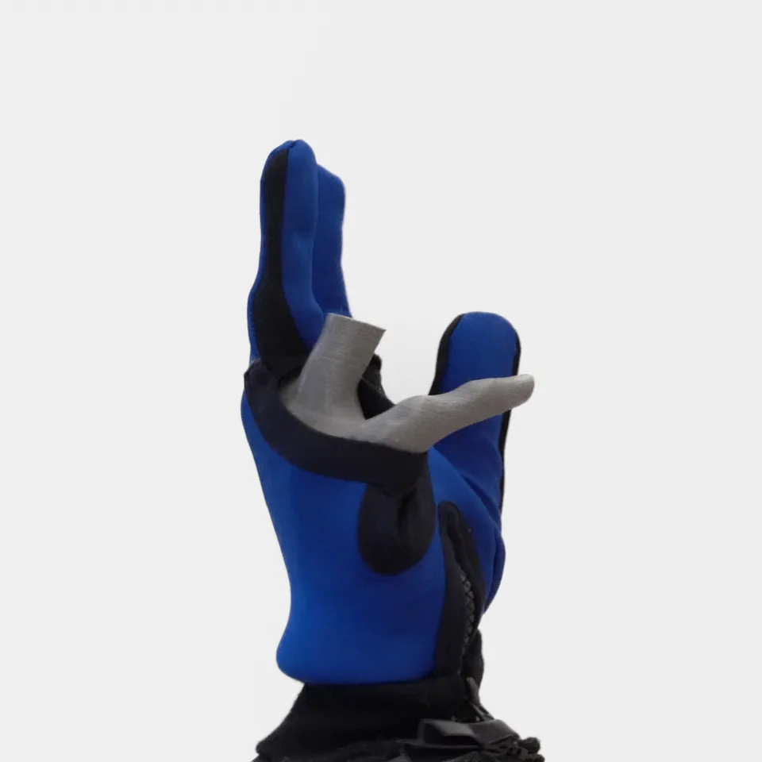
Identifying and designing user-friendly mechanisms in gloves for assessment of Parkinson’s disease
Gloves that people with Parkinson’s can actually put on
Abstract
Parkinson’s Disease (PD) is a progressive neurological movement disorder where the nerve cells of a part of the brain slowly die off. The symptoms start mild and then worsen with disease progression. PD has no cure (to date). A variety of fine and gross movement symptoms are experienced by patients with PD (PwPD), resulting in a wide range of usability issues in activities of daily living (ADL).
Treatment is limited to progression monitoring and symptom management through medication and physical exercise. Manifestation of PD symptoms is unique to every patient and so is the response to the treatment plan. It is then imperative to monitor and understand how the disease’s motor symptoms affect their ability to perform ADL.
The current PD symptom assessment approach is infrequent and susceptible to subjectivity. There is a strong demand for an objective assessment of motor symptoms using wearables. I have conceived and conceptualized Smart Gloves, a unique solution to meet the needs. However, since the solution would need to be used in-home independently by individuals with PD, addressing usability problems in wearing such gloves is vital to improving adherence to such assessment tools.
In this work, as the first phase of the study, I sought to identify potential design accommodations for such gloves through user-centered design, with people with PD (four participants) to improve and inspire design empathy. Upon identifying potential glove designs, I utilized a rapid prototyping technique using laser cutting to create multiple glove prototypes. In a follow-up phase of the study, the concept glove designs and commercially available gloves were evaluated with ten individuals with PD using qualitative (preference, sentiment) and quantitative (wearing time, rating) metrics. In the third and final stage of the study, I validated our final glove design with twenty participants on the basis of perceived aesthetic appeal and usability. This work provides a framework that the engineering and design teams can utilize to identify potential opportunities to improve the usability of daily living tools, gadgets, and apparel for individuals with movement disorders.
Key Metrics
Introduction
1.1About the Disease
Parkinson’s Disease (PD) is a progressive, neurodegenerative disorder of aging that affects both motor and cognitive functions through the loss of dopamine-producing (dopaminergic) neurons. Dopamine is a brain chemical and neurotransmitter produced primarily in the substantia nigra pars compacta region of the brain. Dopamine is key in many brain processes, especially motor initiation and control. As dopaminergic cells progressively die, symptoms progressively worsen . This term originated in the late 19th century and was named after James Parkinson (1755-1824), an English surgeon .
1.1.1Statistics
PD is prevalent predominantly in older adults, projected to affect 1,238,000 individuals in the US by 2030 . It is reported that Parkinson’s complications were the 14th major cause of death in the United States in 2016 with 211,296 deaths , and PD is the second most common neurodegenerative disorder after Alzheimer’s disease . According to the National Institutes of Health, only 15% of people with Parkinson’s have a family history of the disease .
1.1.2Signs and Symptoms
Parkinson’s usually appears among people aged between 50 and 60 years. It is seen to occur before 40 years of age only in about 4% of cases. It infests the patient with both motor and non-motor symptoms.
Non-Motor Symptoms
Some of the early non-motor symptoms of Parkinson’s can begin several years before motor problems develop. The earliest signs that have been confirmed with strong evidence over time include constipation, olfactory deficit, REM sleep behavior disorder, and depression. Other symptoms which could not be supported with concrete evidence are restless-legs syndrome, apathy, fatigue, and anxiety .
Motor Symptoms
Researchers estimated that up to 80% of dopaminergic cells in the nigrostriatal system are lost before the cardinal motor features of PD surface . The cardinal motor signs of PD are tremor, rigidity, bradykinesia/akinesia, and a gait disorder characterized by a flexed posture and short, shuffling steps . Secondary motor symptoms include gait disturbance, micrographia, precision grip impairment, and speech problems . Table 1.1 lays down the non-motor symptom complex of Parkinson’s Disease in a brief manner.
Autonomic symptoms
- Bladder disturbances
- Urgency
- Nocturia
- Frequency
- Sweating
- Orthostatic hypotension
- Falls related to orthostatic hypotension
- Coat-hanger pain
- Sexual dysfunction
- Hypersexuality (likely to be drug-induced)
- Erectile impotence
- Dry eyes (xerostomia)
Neuropsychiatric symptoms
- Depression
- Apathy
- Anxiety
- Anhedonia
- Attention deficit
- Hallucinations, illusion, delusions
- Dementia
- Obsessional behavior (usually drug-induced), repetitive behavior
- Confusion
- Delirium (could be drug-induced)
- Panic attacks
Sleep disorders
- Restless legs and periodic limb movements
- Rapid eye movement (REM) sleep behavior disorder and REM loss of atonia
- Non-REM-sleep related movement disorders
- Excessive daytime somnolence
- Vivid dreaming
- Insomnia
- Sleep-disordered breathing
Other symptoms
- Fatigue
- Diplopia
- Blurred vision
- Seborrhea
- Weight loss
- Weight gain (possibly drug-induced)
Gastrointestinal symptoms
- Dribbling of saliva
- Ageusia
- Dysphagia and choking
- Reflux, vomiting
- Nausea
- Constipation
- Unsatisfactory voiding of bowel
- Faecal incontinence
Sensory Symptoms
- Pain
- Paresthesia
- Olfactory disturbance
1.1.3Causes
The exact cause of Parkinson’s disease is still unknown and remains a topic of research, but as far as current knowledge goes, there are some ‘Risk Factors’. It is believed that PD may have both genetic and environmental components (non-genetic). Cases of Parkinson’s being hereditary are around none to rare. Retrospective case-control studies link Parkinson’s to being caused by exposure to pesticides, herbicides, and heavy metals. Other factors like head trauma, race, and sex make one more likely to be affected. Consumption of tobacco, alcohol and smoking cigarettes has been linked inversely to causing Parkinson’s Disease with very weak evidence .
Low levels of dopamine and norepinephrine, a substance that regulates dopamine, have been linked with Parkinson’s. Lewy bodies, which are abnormal proteins, have also been found in the brains of people with Parkinson’s, and their role in the disease is still unknown .
1.1.4Stages
Being a progressive disease, symptoms of the condition typically worsen over time for Parkinson’s patients. Many doctors use the Hoehn and Yahr scale to classify its stages. This scale divides symptoms into 5 stages, which helps healthcare professionals to learn how advanced disease signs and symptoms are for an individual. Parkinson’s disease is generally classified into five stages. Different stages of Parkinson’s disease and its typical pattern of progression are as follows :
This is the mildest form of Parkinson’s Disease, where symptoms might not even be noticeable. Symptoms in this stage do not tend to hinder daily life and activities. Even if symptoms surface, they may be isolated to one side of the body. Tremors and other movement symptoms coupled with changes in posture, walking, and facial expressions can be observed.
- 0
- No signs of disease.
- 1
- Unilateral disease.
- 1.5
- Unilateral plus axial involvement.
This can be regarded as a moderate stage, where symptoms from stage 1 may worsen over years or even months. Tremors, muscle stiffness, and other movement symptoms may spread to both sides of the body with changes in posture, gait, and facial expressions becoming more evident.
Every patient starts experiencing the progression differently. The person can live independently without any external help, but daily tasks are more difficult and lengthier due to rigidity. Balance issues are unlikely at this stage.
- 2
- Bilateral disease, without impairment of balance.
- 2.5
- Mild bilateral disease, with recovery on pull test.
The middle stage is marked by loss of balance and slowness of movement (Bradykinesia), which might make falls common. Motor and non-motor symptoms become severe. One is still independent but dressing and eating activities are impaired significantly.
- 3
- Mild to moderate bilateral disease; some postural instability; physically independent.
Muscular motion and reactions become slow. Standing up might be fine but a walker is required to move around. The person becomes dependent on external assistance for activities of daily living. Symptoms invade them more severely and independent living can be perilous.
- 4
- Severe disability; still able to walk or stand unassisted.
Hallucinations and delusions begin in this advanced and devitalizing stage. Leg stiffness causes difficulty in standing and walking, forcing the person to use a wheelchair or be bedridden. Round-the-clock assistance is required for Activities of Daily Living (ADL).
- 5
- Wheelchair bound or bedridden unless aided.
1.1.5Testing/Diagnosis/Assessment
Parkinson’s disease in its early stages often goes undiagnosed . There is no specific test for diagnosing Parkinson’s, though there is a combination of various symptoms and diagnostic tests that are used. Diagnosis is made based on health history, a clinical assessment that includes physical and neurological exams, as well as a review of signs and symptoms. The most commonly used methods for clinical assessment of all of the manifestations of PD are the Unified Parkinson’s Disease Rating Scale (UPDRS) , Hoehn and Yahr staging, and the Schwab and England rating of activities of daily living. Although the above-mentioned scales are the most widely applied rating scales of PD, there are still substantial limitations to these scales that must be considered when being used for research .
Imaging tests, such as a CAT scan or MRI, may be used to rule out other conditions but there is no specific neuroimaging technique that is recommended for clinical use for PD . A dopamine transporter (DAT) scan may also be used . While these tests do not confirm Parkinson’s, they can help rule out other conditions and support the doctor’s diagnosis.
1.1.6Treatment
There is currently no cure for Parkinson’s, a disease that is chronic and worsens over time. More than 60,000 new cases are reported in the United States each year . But there may be even more since Parkinson’s is often misdiagnosed .
There is no standard treatment for Parkinson’s disease as it varies from person to person, based on their symptoms. Contemporary treatment for Parkinson’s disease relies on a combination of lifestyle changes, medications, and therapies. Speech therapy, occupational therapy, and physical therapy can also help improve communication and self-care . Table 1.2 summarizes current treatment methods for Parkinson’s Disease with their pros and cons.
| Treatment Option | Pros | Cons |
|---|---|---|
| Drug Treatment | Little to no invasive treatment is required | May lose effectiveness over time. Various side effects of each drug |
| Dopaminergic MedicationsDopamine agonists taken orally or through injection |
|
|
| MAOIs, inhibitors, and antagonistsInhibit breakdown of levodopa and dopamine through oral drugs |
|
|
| AnticholinergicsReduce acetylcholine activity at choline receptors through oral drugs |
|
|
| Neurotrophic Factors: GDNFSmall natural proteins, specifically glial cell line-derived neurotrophic factor (GDNF), delivered through implantation in the brain |
|
|
| NanomedicineModification of existing drugs to improve delivery method |
|
|
| Surgical Treatments | Can have high effectiveness with long-term results | Most invasive of the treatment methods Some methods and side effects are irreversible |
| Ablative SurgeryIncision into the globus pallidus, thalamus, or subthalamic nucleus either bilaterally or unilaterally |
|
|
| Deep Brain StimulationImplant that stimulates the basal ganglia through high-frequency electrical stimulation |
|
|
| Transplantation and Gene TherapyTransplantation of stem cells into the striatum, insertion of non-disease and disease-modifying transgenes |
|
|
| Therapy | Can address multiple symptoms at once, both motor and nonmotor Noninvasive treatment | Usually requires other forms of treatment in addition to therapy |
| Physical TherapyAddresses mobility and motor-related symptoms through physical training |
|
|
| Occupational TherapyHelps patients maintain work, leisure, and self-care activities for as long as possible |
|
|
| Speech TherapyImproves speech through voice exercises |
|
|
| Cognitive Behavioral TherapyManagement of a symptom through behavioral training methods |
|
|
In almost all cases, medication will be required to help manage the various physical and mental health symptoms associated with the disease. Usage of Levodopa, the most common treatment for Parkinson’s disease that works by replenishing dopamine, has several uncertain long-term complications .
1.1.7Prevention
Doctors and researchers do not understand what exactly causes Parkinson’s. They are also not sure why it progresses differently in each person. That is why it is unclear how to prevent this disease . Researchers constantly investigate the causes of Parkinson’s and ways to prevent it. Some researchers suggest that lifestyle factors such as physical exercise and a diet rich in antioxidants might help in yielding positive outcomes .
1.2Background
1.2.1Parkinson’s Disease and its Progression
Parkinson’s disease is typically diagnosed once 80% of dopamine is lost and movement symptoms such as bradykinesia (slowness in movement and initiating movement), rigidity (stiffness), and resting tremors (involuntary rhythmic shaking) manifest. The symptoms associated with PD result in difficulties while performing daily chores such as handwriting, brushing teeth, and buttoning shirts .
These difficulties in performing activities of daily living (ADL) become the most common reason for the first medical consultation for PD . PD has no cure yet, so the present primary medical intervention approach is to manage the symptoms and slow down the progression of the disease. Medication (intake time, dosage), cognitive stress and physical exertion highly influence the presence of various movement symptoms . Levodopa, which is the most commonly used PD medication, further complicates the issue by causing minor side effects of dyskinesia resulting in jerky movements .
Evaluation of PD symptoms is carried out every 3-6 months by clinicians using the Unified Parkinson’s Disease Rating Scale (UPDRS), which uses in-person assessments of specific movement tasks along with questionnaires . The frequency of this evaluation, however, is limited by the availability of a trained rater and suffers from variability between different raters.
1.2.2Diverse Manifestations of Parkinson’s Disease
Parkinson’s disease progresses in a non-linear fashion and exhibits a wide range of motor and non-motor symptoms. The age of onset of PD is different for everyone, and so is the degree of symptoms. This means individuals will experience PD differently, both amongst themselves and within the individual at different stages of the disease.
Patients with Parkinson’s Disease (PwPD) in the early stages of the disease start to learn various coping strategies to perform their daily tasks along with exercises, to slow down the progression of their disease . Later in life, they might need mobility assistance or a caretaker, though some individuals might retain their relative independence .
An active lifestyle has been found to substantially improve Quality of Life measures, as opposed to a sedentary one . The inability to perform their daily tasks can also have negative psychological consequences . It is therefore imperative that designers incorporate accessibility features and affordances into the items used by such individuals to drive positive engagement.
1.2.3Usability Research in Patients with Parkinson’s Disease
With the plethora of movement symptoms, PwPD can face issues while interacting with objects associated with ADL. It then becomes crucial to understand the problem and design wearable devices that can quantify the disease’s symptoms associated with movement. Usability research that has been done in the past on individuals with PD focused largely on software development and exergaming . User interface (UI) design guidelines for users with PD (touchscreen gestures, button spacing) have enabled the creation of accessible smartphone applications . Similar guidelines have also been developed for the layout and design of safe living spaces optimized for individuals with PD . The increased difficulty of using clothing fasteners by such individuals has also been studied , along with the evaluation of assistive devices seeking to simplify various daily tasks .
However, there can be seen only limited usability research done with wearables and apparel such as gloves for PwPD. Gloves can be used for various applications from winter and chemical protection to finger movement performance sensing.
1.2.4Rapid Prototyping and Fabrication of e-textiles
Sensing-enabled gloves can be made possible through e-textile sensing approaches. The computer-aided design-enabled embroidery, knitting, and screen printing have enabled rapid prototyping and scalable manufacturing of textiles functionalized with electronic elements (e-textiles) . Such an approach can enable the integration of sensors, actuators, and computers within textiles. Rapid prototyping of e-textiles has largely been limited to hand sewing using conductive thread and using printed circuit boards with large sewable holes. The LilyPad ecosystem realized such a design through a circular Arduino-compatible embedded controller alongside various compatible sensors and actuators . The connections were commonly made using either thread consisting of stainless steel or silver fibers. These fibers, however, are conductive throughout the surface and can fray, resulting in erroneous electrical connections and susceptibility to corrosion over time with silver yarn . Routing of such connections is complicated since multilayer connections and connection crossings require insulation to be present in regular multilayer printed circuit boards. Realizing such a high-density e-textile layout with conductive thread is possible using multithread technical embroidery machines which use layers of conductive and insulated thread . A digital technical embroidery prototyping approach proposed by Rocha et al. , using a case study of sensorized insoles, details the development of prototypes with varying levels of fidelity. An e-textile design framework has been proposed by researchers, wherein the sketches made on a fabric sheet by a designer are converted into embroidery patterns that can be realized on the same fabric . While digital embroidery provides the e-textile design with an avenue for scalability, it is considerably expensive and involves a time-consuming setup process impeding prototyping speed. Recently, e-textile threads such as SewIY consisting of enamel-coated copper conductors have been used for e-textile applications . These threads overcome many shortcomings of the other conductive threads such as corrosion and short-circuit risk and can be used with regular sewing machines .
1.3Problem Definition
People with Parkinson’s Disease cope with usability issues with tasks they perform in their day-to-day lives given their various movement symptoms . For effective symptom management treatment of PD by clinicians, progression assessment of the disease is necessary. The current assessment standard for PD is infrequent and relies on the subjective visual assessment of the conductor .
Wearable technology can assist in carrying out objective symptom assessment, but the usability factors that arise because of the patient’s symptoms act as a barrier for in-home assessments. Therefore, it becomes crucial that designers and engineers incorporate mechanisms/features that improve the wearability of these wearables in the developmental stage itself. They need to work in close collaboration with the user and build products around them (User/human-centered Design).
1.4Objectives and Scope of the Work
The objectives of the work include:
- To conduct in-person studies with Parkinson’s disease patients to understand their motor capabilities,
- To propose a glove design that people with Parkinson’s disease find easy to wear and use, which could eventually help them monitor and manage the progression of their disease, and
- To come up with a manufacturing process that can be used for fast production of the gloves.
The scope of the work would be limited to designing and validating the gloves. Sensorization of the gloves and in-home testing of the complete set-up would be beyond the scope of this project.
1.5Methodology
The research carried out as a part of this project followed the 5-Stage design process (Figure 1.1) and the research study was conducted in three phases. In the first phase of this work, first, an in-depth study with four Parkinson’s disease patients was executed to understand their preferred/unpreferred and desirable/undesirable mechanics of doing tasks of Daily Living by asking them to perform a series of twelve tasks. These tasks were classified as fine and gross, hand and finger movements, and were chosen such that at least two tasks fall in each quadrant of the 2 x 2 classification matrix. For example, tying shoelaces is a fine hand and fine finger motion task while wiping dishes is a fine hand but gross finger motion task. While the participants performed the tasks, they were observed intently for any discomfort or difficulties in performing the tasks. After each task, participants were asked a series of questions. The team took notes and recorded the whole session in video and audio format for in-depth analysis. The video recording was analyzed by each team member individually. Observations were written on sticky notes and data was analyzed using Affinity Mapping/Graphing to arrive at a concise design problem. As per the design problem, various glove design concepts were generated for evaluation based on usability criteria and practical feasibility. The final three qualifying glove design concepts were then rapidly prototyped using vector image generating software, a laser cutter, and a computerized sewing machine.
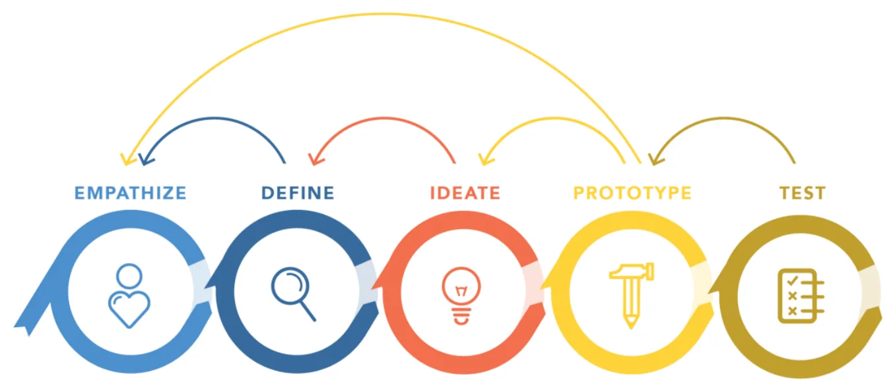
Then in the second phase, the final three prototypes from Phase 1 along with three commercially available gloves were evaluated with ten participants for the time taken to wear and remove the gloves, followed by a qualitative feedback questionnaire. Meanwhile, in the background, the team worked on a final glove design based on the learnings and feedback from the participants on all six glove designs.
In the final, i.e., the third phase, the team evaluated the final glove design based on optimizing the glove-wearing process. To validate the design, these gloves were tested with twenty participants with varying degrees of PD manifestation.
A total of twenty-five participants participated throughout the study and were labelled sequentially, with some participating in more than one trial. Appendix 1 comprises the participant pool master list.
1.6Organization of the Thesis
Based on the research and design process followed in this project work, the flow of the work is presented in the thesis with the help of five chapters, as given below.
Chapter 1 Introduction: This chapter talks about what Parkinson’s disease is, its symptoms, causes, diagnosis, treatment, and prevention. The later part of this chapter, the background, is about what has been done in this domain and what needs to be done to further the research. The chapter also discusses the objectives and the scope of the work.
Chapter 2 Design Methodology: A five-stage iterative design thinking process has been followed to design and create the gloves. It covers the process, observations, data, analysis, learnings, and final design outcome of the work carried out as a part of the research.
Chapter 3 Discussion: This chapter summarizes the complete design process, justifies the final glove design, and talks about other aspects of the gloves.
Chapter 4 Conclusions and Scope of Future Work: This chapter throws light on the uncontrollable variables and limitations of the whole study. It points out what could possibly be the next step and how the gloves can be improved further. In the end, it includes points to keep in mind when performing such studies in the future.
Design Methodology
This chapter discusses each stage of the five-stage design process in detail. It includes research and analysis methodology conducted to design the gloves. The Empathize stage covers understanding of the user; the Define phase and the Design phase include the problem identification and the solution. In the Prototyping and Testing phases, the designs are created and tested out with PwPD.
2.1Empathize
Through previous studies conducted using earlier prototypes of our movement-sensing gloves, I learned that PwPD encountered difficulties while using the gloves that were designed for the general population. Difficulties in wearing, using, and removing such gloves had largely arisen from their tremors, movement rigidity, and other motor inhibitions.
To investigate these problems, I conducted an in-depth, detailed, and in-person design study with four participants with PD, with an aim to identify suitable glove design approaches, by identifying mechanisms that PwPD find easy to execute.
2.1.1Trial Design (12 Tasks)
For the user study, I recruited four participants with Parkinson’s Disease (2 self-identified as male and 2 self-identified as female), as shown in Table 2.1. The participants provided us permission to use anonymized pictures and videos. The Montreal Cognitive Assessment (MoCA) test was administered to participants before recruitment to ensure participants’ capability to provide informed consent . The MoCA test is necessary in this case as PwPD, particularly in the later stages, have mild cognitive impairment.
| P No. | Age | Sex | Years with PD | Medication (hrs) | MoCA |
|---|---|---|---|---|---|
| P1 | 76 | F | 20 | 7 | 27 |
| P2 | 65 | M | 5 | 3 | 26 |
| P3 | 54 | F | 3 | 1.5 | 28 |
| P4 | 79 | M | 1 | 4 | 28 |
To clearly understand PwPD and their independent manual capabilities, clinicians within the team identified 12 tasks mentioned in Table 2.2 from the list of ‘Activities of Daily Living (ADL)’ that lay under the categories of feeding, dressing, and personal hygiene . Since these gloves are intended to be used in an indoor (home) environment, categories such as ambulating, continence, and toileting were ruled out. The total number of tasks was kept to a number that does not require a lot of time per participant, at the same time providing valuable insights to evaluate our design assumptions and hypothesis.
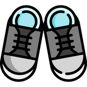
#01Shoelaces
To tie and untie shoelaces on a pair of shoes.
Shirt buttons
To do buttons on a shirt (3 buttons).
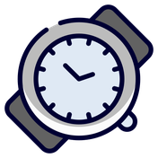
#03Wristwatch
To put on and take off a wristwatch with a rubber strap and tang buckle.
Zipper Jacket
To align the zippers and then pull the zipper to open and close the jacket.
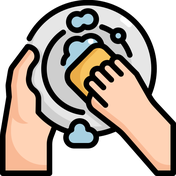
#05Wiping dishes
To dry wipe by imitating the action of washing dishes using a scrub pad.
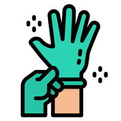
#06Nitrile gloves
To put on and take off a pair of purple nitrile gloves.
Combination lock
To turn the dial of a metallic combination lock.
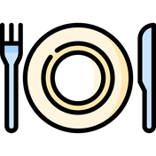
#08Knife and fork
To cut into pieces a unit of string cheese stick using a plastic fork and knife.
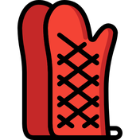
#09Oven mitts
To put on and take off a pair of oven mitts.
Ring
To put on and take off a ring of the appropriate finger size.
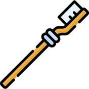
#11Brushing teeth
To imitate the action of brushing teeth in the air using a toothbrush.
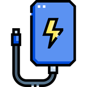
#12Power bank
To connect a USB data cable to a power bank.
The 12 chosen tasks were then classified into tasks that require a combination of fine or gross hand movements and fine or gross finger movements, into a 2 × 2 matrix as seen in Figure 2.1. Also, before finalizing the 12 tasks, it was made sure that at least two tasks with different complexity were placed inside each quadrant so that minute differences in movements can be marked out.
Task #04 appears in the upper two quadrants as it has two steps to it. First, the participant has to align the zipper in the right position using fine hand + fine finger motions. After that, they pull the zipper up to the end and push in the snap buttons, which requires fine hand + gross finger motion.
2.1.2Procedure
This study was conducted in a controlled environment wherein the participant was surrounded by items they would commonly use daily, as seen in Figure 2.2. They were asked to mention the time of their last dosage of Levodopa to check for any effects of the medicine on the tasks they were about to perform. Participants were asked to perform the 12 tasks as listed in Table 2.1 while being in a seated position, but not necessarily. They could choose to stand up if they felt the task required standing. After every task, they were asked the same set of questions in which they had to subjectively rate their perceived level of difficulty with the task, on a 10-point Likert Scale where 1 = Difficult and 10 = Easy. The questionnaire can be found in Appendix 2. If any task was not rated a 10 by the participant, they were asked about the specifics of the difficulty faced. These prompts were vital for establishing empathetic communication with participants to motivate them to think aloud.
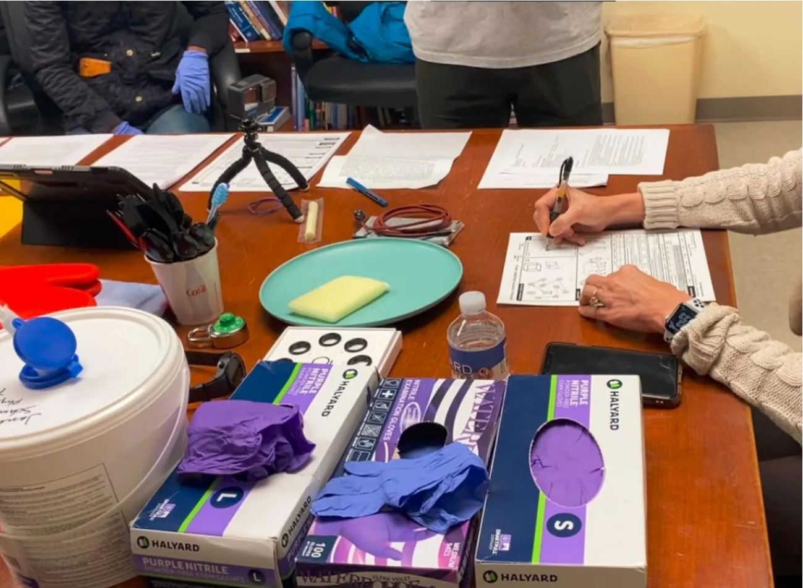
2.1.3Results
During the study, it was observed that Participant 2 (green, P2) had the most severe resting tremors and jerky movements out of all the participants, which also affected their ability to complete task #02 successfully. P1 had the longest diagnosed history of Parkinson’s Disease among all the participants, but the severity of tremors was less than P2’s, whereas P3 and P4 had even fewer tremors and have been diagnosed much more recently.
Time taken (with reference to Figure 2.3)
Show data
| Task | P1 | P2 | P3 | P4 |
|---|---|---|---|---|
| #01 Shoelaces | 42 | 123 | 67 | 25 |
| #02 Shirt buttons | 90 | 165 ✕ | 50 | 64 |
| #03 Wristwatch | 25 | 68 | 15 | 15 |
| #04 Zipper jacket | 77 | 100 | 21 | 32 |
| #05 Wiping dishes | 10 | 15 | 20 | 5 |
| #06 Nitrile gloves | 150 | 196 | 24 | 36 |
| #07 Combination lock | 40 | 40 | 34 | 10 |
| #08 Knife and fork | 18 | 15 | 20 | 8 |
| #09 Oven mitts | 13 | 11 | 21 | 8 |
| #10 Ring | 5 | 2 | 3 | 4 |
| #11 Brushing teeth | 10 | 15 | 12 | 5 |
| #12 Power bank | 4 | 30 | 10 | 8 |
Seconds. ✕ P2 could not finish the buttons task.
As a general trend, for most of the tasks, the time taken was directly proportional to the severity of tremors in the participant. Time taken by the participants to perform all the tasks, in decreasing order, is: P2 followed by P1, then P3, and finally P4. P4 happens to be the most recently diagnosed.
Tasks that required considerable finger strength took more time to be completed. Task number #02 (Shirt buttons) took the participants around a minute to do 3 buttons. The task involved first holding the button and the other side of the shirt with a pinch grip and then pushing the button forcefully through the buttonhole. The pinching and pushing movements require considerable finger strength. Similarly, for task #06, to wear the nitrile gloves, the participant had to stretch the mouth of the glove, and then push and wiggle the fingers in, through the structureless finger pockets, while overcoming the friction of the material. When comparing the nitrile gloves to the oven mitts, putting on the oven mitts (task #09) was easy for all the participants as they had enough structure, smoothness, and room for the hand and fingers to slide in.
Perceived Difficulty
The longer time taken to complete the task did not correspond to the task being difficult since one task may be easy but could take more time to be completed as compared to other tasks. Here, with reference to Figure 2.4, I talk about the tasks that were ‘perceived’ to be difficult to complete by the participants. The participants reported tasks no. #02 and #06 are the most difficult. Tasks no. #01, #03, #04, and #12 had mixed levels of difficulty among the participants while they found tasks no. #05, #07, #08, #09, #10 and #11 to be the easiest to perform. Tasks no. #01, #02, #03, #04, and #06, which recorded maximum time to complete, also recorded high to moderate difficulty ratings. These were the tasks that involved fine finger movements. On the contrary, tasks no. #05, #07, #08, #09, #10, #11, and #12 recorded moderate to easy difficulty rating in performing and involved gross hand movements except for task no. #05.
Show data
| Task | P1 | P2 | P3 | P4 |
|---|---|---|---|---|
| #01 Shoelaces | 10 | 6 | 7 | 8 |
| #02 Shirt buttons | 1 | 1 | 3 | 3 |
| #03 Wristwatch | 10 | 7 | 7 | 8 |
| #04 Zipper jacket | 9 | 8 | 6 | 9 |
| #05 Wiping dishes | 10 | 8 | 10 | 10 |
| #06 Nitrile gloves | 1 | 4 | 7 | 8 |
| #07 Combination lock | 9 | 10 | 9 | 10 |
| #08 Knife and fork | 9 | 6 | 8 | 9 |
| #09 Oven mitts | 10 | 10 | 9 | 10 |
| #10 Ring | 8 | 9 | 9 | 10 |
| #11 Brushing teeth | 9 | 8 | 8 | 10 |
| #12 Power bank | 10 | 6 | 8 | 9 |
Rating out of 10; 1 = difficult, 10 = easy.
P2, with the most severe case of tremors, found most of the tasks difficult as compared to other participants, which is shown by the smallest area covered in the spider/radar chart in Figure 2.5. The case is exactly the opposite for P4 with the least tremors and the most recent diagnosis.
2.1.4Conclusion
Tremors highly influence the individual’s ability to perform day-to-day tasks and increase the level of difficulty for the tasks that require fine finger + fine hand movements. Some, but lesser, difficulty can be seen with the tasks that require fine finger + gross hand motions.
It would be safe to say that favorable movement tasks are those that do not require fine finger motions altogether and much safer are the tasks that involve gross movements for both hands and fingers.
To produce an effective design for the glove, it was decided that glove-wearing mechanics that use a combination of fine finger + fine hand motions are to be avoided. Mechanisms that utilize gross hand movements and gross finger movements would therefore be ideal. Additionally, the manoeuvres should not require considerable finger strength to be executed.
2.2Define
Based on the participants’ feedback and our learnings from the quantitative data in the Empathy stage, I understood the limits of their dexterity and figured out unfavorable glove-wearing mechanics. Now it was time to define the elements to be incorporated into the glove design.
Each team member documented their observations of participants’ hand and finger movements, comments, and non-verbal cues, on sticky notes, after careful study of the video recordings. The sticky notes were then sorted and analyzed, which distilled the team’s understanding into a consolidated Affinity Map.
2.2.1Affinity Mapping
Members of the design team individually reviewed each participant’s video footage and recorded their respective observations on sticky notes. This was done to avoid group thinking and ensure a comprehensive analysis of the recordings. Figure 2.6 shows the actual image of the affinity mapping being performed. These sticky notes were digitized in a web-based platform called Miro for the ease of understanding and presentation.
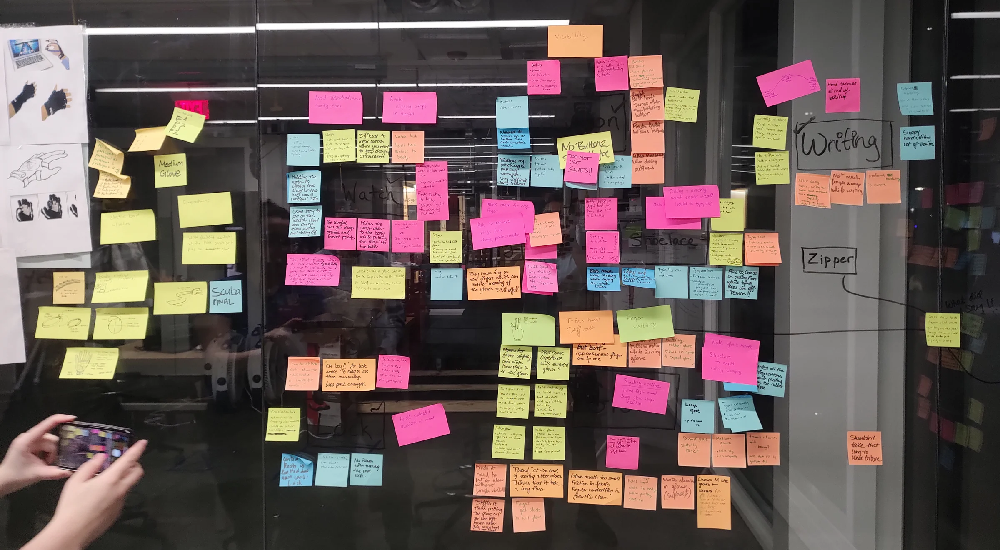
First, all the observations were randomly pasted, participant-wise, on a wall as shown in Figure 2.7. Then the sticky notes were clustered task-wise across participants in a tabular fashion (Figure 2.8). Following this step, the stickies were sorted task-wise, in a fashion similar to that of the task category matrix and then the recurring observations were placed on top of each other, with the most descriptive one at the top, as shown in Figure 2.9. Contradictory observations were dispelled by collaborative reexamination of the footage until consensus was reached. Finally, the sticky notes were then discussed among the team members to foster a shared understanding of the learnings from the Affinity Map.
Want structured in glove
- Support
Mitts
- Easy, big mouth, less finger holes, big finger pockets. Pressure/force application required standing
- Body weight
Chooses M size gloves
- Knows their fit / doesn’t want it to be small and not too large
- Fingers are bent
Stick fingers but bent
- Approached each finger one by one
Tremors with oven mitts
- Heavy? Puts them off by grabbing top
Using phone
- Slow, deliberate
- Has to re-tap frequently
Ask to stand for cutting food task
- Slight tremors when picking up hand to cut
Indicates that they anticipate jacket to be extremely difficult
- Standing
Putting rubber glove
- Blows on opening to expand the glove
Medium glove
- A little big
- Fit is acceptable
Ring
- Needed lab rings
- Hard to get out of package
- Easy ring goes on quickly
Can twist lock fast
- Slowness and deliberation on turning for numbers
After doing tasks, writing seems harder, hand movements more shaky
- Putting pen down starts tremor, then stops
Watch task
- Holds hand close to the body
Stood for zipper
- Hard to get zipper sorted, easier once attached
- Snaps: hard to push, force and bad
Easier to take buttons out
- Still tremors on second button
- Putting in difficult
- Taking out
Tying shoe
- First shoe easier
- Tremors on 2nd
- Difficulty 10, super easy
Buttons
- Difficult
- Still tremors
- Button makes stiff never used
- Easier when no gloves but task
Which part harder for jacket
- Second arm
- Says they need training every so often
Needs helper where to help
- Keeps requesting to help
- Give signals
Power bank
- Difficulty plugging in
- Hard to place in port
Large glove
- Probably need extra large
Gloves are extremely difficult to put on
- Get stuck
- Tremors a lot
Lock
- Even slower than other participants
Buttons
- Keep losing the placement of the buttonhole
Buttons
- Intense tremors
Buttons
- Trouble putting sides together
Tying shoelaces
- For sure slow but okay
- Second shoe 2 failed attempts, 3rd got it through, adjusted after trying to fix uneven (fussy)
Fine and coarse coordination while tying laces are off
- Tremors!
Difficulty getting zipper attachment
- Once attached, zips fine
Snaps
- Frustration putting force down on snaps to push
- Undoing easier. Push versus pull?
Ring
- Not as difficult
Watch
- Difficult
- Tremors
- Doesn’t wear watch regularly
Dishes
- Said holding plate was hardest
Rubber gloves
- Chooses small gloves goes back and chooses medium
- Fairly easy
- Stretching more muscle movement, fine motor.
Rubber gloves
- Preferable for winter gloves separate fingers
- Uses in between type stretchy and more structured
- Fleece gloves preferred
First glove harder because they used non-dominant hand
- Glove didn’t get in the way of putting second glove on
Oven mitts
- Transitioning so different
- Beginning was most difficult opening glove initially
Opening the mitts was the most difficult part for the participants
- Medicine begins to wear off, takes meds at 1:00 p.m.
- Trying to take a lower dose every 3 hours to mimic more physiological. When meds are due again legs begin to shake but then goes away.
Combination lock
- Not much visible tremoring, slow movements
- Pulling the lock out most difficult
Cheese
- Tremors
- Difficult part: opening package
- Pulling opposite ways. Starting is hard then once you get into a pattern it’s easier, then muscles need change
Snaps make hands tremor a bit more
- Putting on the jacket through the arms itself is hard apart
- Zipping is 10, easy.
Shirt / button
- Much harder than before PD
- Generally chooses to wear stretchy things rather than button or fixtures
- Button hardest
- Snap and velcro easiest.
Shoelaces
- Repeating motions makes tremor happen more
- Concentrating tremors happen more. Which was harder? Tying or untying double knot.
Jacket
- Uses own jacket with zipper plus snaps
- Harder to get jacket zipper connected they lean bracing zipper on legs
Ring
- Participant did both hands
- Tremors on the second hand more than the first
- Hardest part is over knuckle
- More force / concentration due to tremors
Watch
- Puts hand down on table to support while putting watch on
- Difficult getting the sides to meet
Plugging cable
- Slight tremor when positioning wire holding up in the air
- Difficult getting it in the port, alignment
Dishes
- Easy because participant does it a lot
- With heavier dishes, difficulty in turning dishes over, muscle and elbow
Washing dishes
- Easy, accustomed to it.
Toothbrush
- Has electric toothbrush so it doesn’t have to do as much small hand movements.
Oven mitts
- Super easy
Buttons
- Stands
- Able to button
- Easier when wearing
- Notices buttons (upper) were loose
Zipper
- Speedy
- Get stuck between maneuver through that hiccup
Snaps
- Easy
- Looked a bit harder than zipper
Ring
- Thumb going off (tremors)
Difficult sliding watch fob into metal piece
- Says easy, most difficult is tucking it in
Powerbank
- Left hand holding bank
- Tremors
- Holding up
Dishes
- Holding dish with left hand
Brushing teeth
- No difficulty
Tying shoe
- First shoe easier
- Tremors on 2nd
- Difficulty 10, super easy
Easier to take buttons out
- Still tremors on second button
- Putting in difficult
- Taking out
Buttons
- Difficult
- Still tremors
- Button makes stiff never used
- Easier when no gloves but task
Watch task
- Holds hand close to the body
Indicates that they anticipate jacket to be extremely difficult
- Standing
Stood for zipper
- Hard to get zipper sorted, easier once attached
- Snaps: hard to push, force and bad
Which part harder for jacket
- Second arm
- Says they need training every so often
Want structured in glove
- Support
Chooses M size gloves
- Knows their fit / doesn’t want it to be small and not too large
- Fingers are bent
Stick fingers but bent
- Approached each finger one by one
Putting rubber glove
- Blows on opening to expand the glove
Medium glove
- A little big
- Fit is acceptable
Can twist lock fast
- Slowness and deliberation on turning for numbers
Ask to stand for cutting food task
- Slight tremors when picking up hand to cut
Mitts
- Easy, big mouth, less finger holes, big finger pockets. Pressure/force application required standing
- Body weight
Tremors with oven mitts
- Heavy? Puts them off by grabbing top
Ring
- Needed lab rings
- Hard to get out of package
- Easy ring goes on quickly
Using phone
- Slow, deliberate
- Has to re-tap frequently
After doing tasks, writing seems harder, hand movements more shaky
- Putting pen down starts tremor, then stops
Needs helper where to help
- Keeps requesting to help
- Give signals
Tying shoelaces
- For sure slow but okay
- Second shoe 2 failed attempts, 3rd got it through, adjusted after trying to fix uneven (fussy)
Fine and coarse coordination while tying laces are off
- Tremors!
Buttons
- Keep losing the placement of the buttonhole
Buttons
- Intense tremors
Buttons
- Trouble putting sides together
Watch
- Difficult
- Tremors
- Doesn’t wear watch regularly
Difficulty getting zipper attachment
- Once attached, zips fine
Snaps
- Frustration putting force down on snaps to push
- Undoing easier. Push versus pull?
Dishes
- Said holding plate was hardest
Large glove
- Probably need extra large
Gloves are extremely difficult to put on
- Get stuck
- Tremors a lot
Lock
- Even slower than other participants
Ring
- Not as difficult
Power bank
- Difficulty plugging in
- Hard to place in port
Shoelaces
- Repeating motions makes tremor happen more
- Concentrating tremors happen more. Which was harder? Tying or untying double knot.
Shirt / button
- Much harder than before PD
- Generally chooses to wear stretchy things rather than button or fixtures
- Button hardest
- Snap and velcro easiest.
Watch
- Puts hand down on table to support while putting watch on
- Difficult getting the sides to meet
Snaps make hands tremor a bit more
- Putting on the jacket through the arms itself is hard apart
- Zipping is 10, easy.
Jacket
- Uses own jacket with zipper plus snaps
- Harder to get jacket zipper connected they lean bracing zipper on legs
Dishes
- Easy because participant does it a lot
- With heavier dishes, difficulty in turning dishes over, muscle and elbow
Washing dishes
- Easy, accustomed to it.
Rubber gloves
- Chooses small gloves goes back and chooses medium
- Fairly easy
- Stretching more muscle movement, fine motor.
Rubber gloves
- Preferable for winter gloves separate fingers
- Uses in between type stretchy and more structured
- Fleece gloves preferred
First glove harder because they used non-dominant hand
- Glove didn’t get in the way of putting second glove on
Combination lock
- Not much visible tremoring, slow movements
- Pulling the lock out most difficult
Cheese
- Tremors
- Difficult part: opening package
- Pulling opposite ways. Starting is hard then once you get into a pattern it’s easier, then muscles need change
Oven mitts
- Transitioning so different
- Beginning was most difficult opening glove initially
Opening the mitts was the most difficult part for the participants
- Medicine begins to wear off, takes meds at 1:00 p.m.
- Trying to take a lower dose every 3 hours to mimic more physiological. When meds are due again legs begin to shake but then goes away.
Ring
- Participant did both hands
- Tremors on the second hand more than the first
- Hardest part is over knuckle
- More force / concentration due to tremors
Toothbrush
- Has electric toothbrush so it doesn’t have to do as much small hand movements.
Plugging cable
- Slight tremor when positioning wire holding up in the air
- Difficult getting it in the port, alignment
Buttons
- Stands
- Able to button
- Easier when wearing
- Notices buttons (upper) were loose
Difficult sliding watch fob into metal piece
- Says easy, most difficult is tucking it in
Zipper
- Speedy
- Get stuck between maneuver through that hiccup
Snaps
- Easy
- Looked a bit harder than zipper
Dishes
- Holding dish with left hand
Oven mitts
- Super easy
Ring
- Thumb going off (tremors)
Brushing teeth
- No difficulty
Powerbank
- Left hand holding bank
- Tremors
- Holding up
Tying shoe
- First shoe easier
- Tremors on 2nd
- Difficulty 10, super easy
Tying shoelaces
- For sure slow but okay
- Second shoe 2 failed attempts, 3rd got it through, adjusted after trying to fix uneven (fussy)
Fine and coarse coordination while tying laces are off
- Tremors!
Shoelaces
- Repeating motions makes tremor happen more
- Concentrating tremors happen more. Which was harder? Tying or untying double knot.
After doing tasks, writing seems harder, hand movements more shaky
- Putting pen down starts tremor, then stops
Easier to take buttons out
- Still tremors on second button
- Putting in difficult
- Taking out
Buttons
- Difficult
- Still tremors
- Button makes stiff never used
- Easier when no gloves but task
Buttons
- Keep losing the placement of the buttonhole
Buttons
- Intense tremors
Buttons
- Trouble putting sides together
Shirt / button
- Much harder than before PD
- Generally chooses to wear stretchy things rather than button or fixtures
- Button hardest
- Snap and velcro easiest.
Buttons
- Stands
- Able to button
- Easier when wearing
- Notices buttons (upper) were loose
Watch task
- Holds hand close to the body
Watch
- Difficult
- Tremors
- Doesn’t wear watch regularly
Watch
- Puts hand down on table to support while putting watch on
- Difficult getting the sides to meet
Difficult sliding watch fob into metal piece
- Says easy, most difficult is tucking it in
Indicates that they anticipate jacket to be extremely difficult
- Standing
Stood for zipper
- Hard to get zipper sorted, easier once attached
- Snaps: hard to push, force and bad
Which part harder for jacket
- Second arm
- Says they need training every so often
Difficulty getting zipper attachment
- Once attached, zips fine
Snaps
- Frustration putting force down on snaps to push
- Undoing easier. Push versus pull?
Snaps make hands tremor a bit more
- Putting on the jacket through the arms itself is hard apart
- Zipping is 10, easy.
Jacket
- Uses own jacket with zipper plus snaps
- Harder to get jacket zipper connected they lean bracing zipper on legs
Zipper
- Speedy
- Get stuck between maneuver through that hiccup
Snaps
- Easy
- Looked a bit harder than zipper
Dishes
- Said holding plate was hardest
Dishes
- Easy because participant does it a lot
- With heavier dishes, difficulty in turning dishes over, muscle and elbow
Washing dishes
- Easy, accustomed to it.
Dishes
- Holding dish with left hand
Want structured in glove
- Support
Chooses M size gloves
- Knows their fit / doesn’t want it to be small and not too large
- Fingers are bent
Stick fingers but bent
- Approached each finger one by one
Putting rubber glove
- Blows on opening to expand the glove
Medium glove
- A little big
- Fit is acceptable
Large glove
- Probably need extra large
Gloves are extremely difficult to put on
- Get stuck
- Tremors a lot
Rubber gloves
- Chooses small gloves goes back and chooses medium
- Fairly easy
- Stretching more muscle movement, fine motor.
Rubber gloves
- Preferable for winter gloves separate fingers
- Uses in between type stretchy and more structured
- Fleece gloves preferred
First glove harder because they used non-dominant hand
- Glove didn’t get in the way of putting second glove on
Can twist lock fast
- Slowness and deliberation on turning for numbers
Lock
- Even slower than other participants
Combination lock
- Not much visible tremoring, slow movements
- Pulling the lock out most difficult
Ask to stand for cutting food task
- Slight tremors when picking up hand to cut
Cheese
- Tremors
- Difficult part: opening package
- Pulling opposite ways. Starting is hard then once you get into a pattern it’s easier, then muscles need change
Mitts
- Easy, big mouth, less finger holes, big finger pockets. Pressure/force application required standing
- Body weight
Tremors with oven mitts
- Heavy? Puts them off by grabbing top
Oven mitts
- Transitioning so different
- Beginning was most difficult opening glove initially
Opening the mitts was the most difficult part for the participants
- Medicine begins to wear off, takes meds at 1:00 p.m.
- Trying to take a lower dose every 3 hours to mimic more physiological. When meds are due again legs begin to shake but then goes away.
Oven mitts
- Super easy
Ring
- Needed lab rings
- Hard to get out of package
- Easy ring goes on quickly
Ring
- Not as difficult
Ring
- Participant did both hands
- Tremors on the second hand more than the first
- Hardest part is over knuckle
- More force / concentration due to tremors
Ring
- Thumb going off (tremors)
Power bank
- Difficulty plugging in
- Hard to place in port
Plugging cable
- Slight tremor when positioning wire holding up in the air
- Difficult getting it in the port, alignment
Powerbank
- Left hand holding bank
- Tremors
- Holding up
Toothbrush
- Has electric toothbrush so it doesn’t have to do as much small hand movements.
Brushing teeth
- No difficulty
Meta-analysis of the clustered observations was done across the tasks to identify the general trend of problems faced by the PwPD. Ultimately, all the sticky notes about the trend were moved to a whiteboard to consolidate the findings. The concentrated form of the observations was clustered into 3 heads, namely Mechanisms, Design Opportunities, and To Avoid.
2.2.2Observation Summary
Mechanisms
Pulling and pinching movement
From the observations made in the Shoelaces task (task #01), I found that fine finger motion like pinching and pulling motion, rather than pushing, was easier for the participants, while doing the snap buttons on the jacket was difficult, as it required considerable strength to be applied on the fingertips, which is intensified by the tremors.
Repeated movement difficulty
Bradykinesia causes difficulty while performing the same task repetitively for an extended duration. Simple mechanics requiring minimal gross finger movements would be suitable if they are quick and involve non-repetitive motions.
Need for stabilization
All participants utilized some or the other form of support, either a table or their own body, to execute some of the tasks. Participants with higher intensity of tremors strongly relied on physical support to execute most of the tasks. This fact can be leveraged concerning the glove mechanics, by using the tabletop or the body itself as a support, to dampen the tremors and complete the glove-wearing and removing process.
Design Opportunities
Finger visibility
With the nitrile glove (task #06), three out of four participants faced the issue of getting any two of their fingers into a single finger pocket. However, they found it easier to put the oven mitts on, possibly due to the lack of finger partitions and big room for fingers. Since we want to measure the two fingers separately, it is essential to have the index and middle fingers in separate finger pockets. To make sure that the fingers go into the right pocket at the very first attempt, the fingers should be visible right before the user begins to insert them into their respective pockets.
Structure to avoid crumpling/rolling
While performing tasks, I observed stiffness and rigidity in the hands of the participants. That might have made it difficult for them to perform fine finger movements efficiently. Since the nitrile gloves were flexible, rubbery, and lacked structure, the user had to wiggle their way into the glove, which is difficult with a stiff hand without sufficient sensory feedback. To account for this, the glove should have some structure of its own, along with smooth fabric that allows the hand and fingers to slide in easily.
Wide glove mouth
Participants took just a few seconds to slip the oven mitts on, thanks to their wide mouth and a big, single pocket for the fingers. But in contrast, despite being flexible, the nitrile gloves were difficult for the participants to insert their hands in because of an elastic narrow mouth. A wide glove mouth will enable easy insertion of the hand and will provide better control over the glove while inserting the fingers. A pre-aligned non-separable zipper or a Velcro with an elastic fabric might take care of this problem.
More room for fingers
Participants complained of tightness around the fingers with the nitrile gloves and the earlier versions of the glove. In the scope of this project, we require enough fit that the sensors align well with the finger knuckles and the user’s fingers have enough breathing space for comfort and mobility. A material that is stretchy but retains its structure is preferable here.
To Avoid
Avoid individual moving pieces
In our early designs, I thought that it might be helpful if we divided the entire process of wearing a glove into easy small steps. Based on our learnings from the Empathy stage, to start, stop and then continue a motion for a longer duration is difficult for PwPD. I revised the glove and decided that it should not have separate pieces; rather, it should be a single absolute unit. Also, I aimed to keep the wearing and removing time as short as possible.
Avoid aligning steps in design
The wristwatch task (task #03) had the participants first align the wrist band into the Tang buckle, insert it, change the hand orientation, and then adjust it. Aligning the band to the buckle seemed to be the most difficult and time-consuming step in the whole process. A similar trend was observed with snaps, buttons, or anything similar that involved finely coordinated motions.
Avoid fine finger motion altogether
Participant 2, who had the most severe tremors, attempted the shirt button task (task #02) for 165 seconds and ended with a failed attempt. This specific task required fine finger as well as fine hand motion. From our general observations, fine finger motions should be avoided.
2.2.3Conclusion
The in-person observations and qualitative analysis of the participants yielded much more valuable insights than quantitative analysis can. It revealed the feelings and truths that one might not either speak or know by themselves. By the end of this stage, the team had a deeper understanding of the participants with respect to a glove. I put together a list of what to do and what not to do, what to have, and what to avoid in a glove. To collate all this knowledge onto paper, a brief document that has all the concise requisite information to direct the team and drive the design process, a ‘Design Brief’, was imperative. It marked the boundaries for design exploration while ensuring there was enough room for new glove designs to be explored.
2.3Ideate
After narrowing down the feasible glove-wearing mechanisms to a few in the Define stage, I made a design brief that served as a guide to what the glove should be like. The document highlighted the requirements, dos and don’ts, analysis methods, and timeline and stated what marks the success of the project. Implementing the ‘Design Brief’, it was time to get the team together and start brainstorming.
Loads of novel ideas and combinations of mechanisms for enhancing glove usability were generated, proposed, discussed, built upon, tried, and tested using quick mockups, critiqued, and evaluated for feasibility, which finally boiled down to three potential prototype design concepts.
2.3.1Brainstorming
With the Design Brief in hand, the team members had a common shared understanding of the problem to be solved and a clear ground to start with. We had brainstorming sessions involving a Textile designer (Rachel), Designer and Mechanical Engineer (Shubham), Biotechnologist (Sebastien), and Electrical & Biomedical Engineer (Vignesh), all in one place. The diversity in our team helped us to come up with lots of novel, inspired, and out-of-the-box ideas for the gloves.
Various elements and mechanisms associated with the gloves were divided into small chunks like hand and finger insertion and wrist fastening/glove opening mechanisms, to make the whole problem more approachable. These small chunks were dealt with one at a time and ideated separately. Quick mockups for these ideas were tried and tested using prop fabrics, pins, and elastic elements available inside the lab (Figure 2.10). The design ideas for each chunk were sketched out on paper, explained, discussed, and built upon amongst the team members, as shown in Figure 2.11 and Figure 2.12.
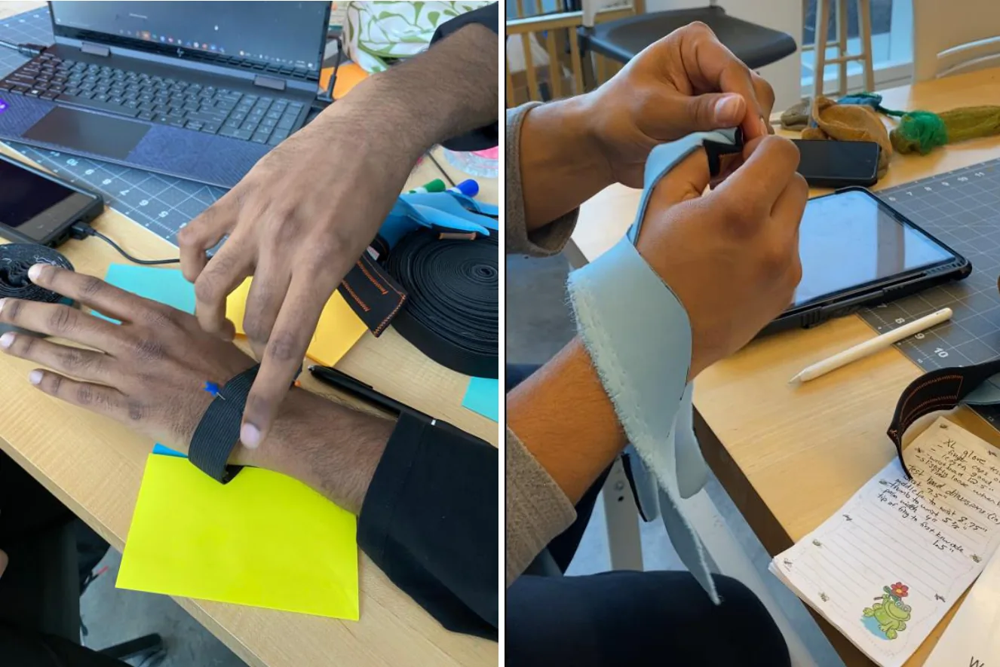
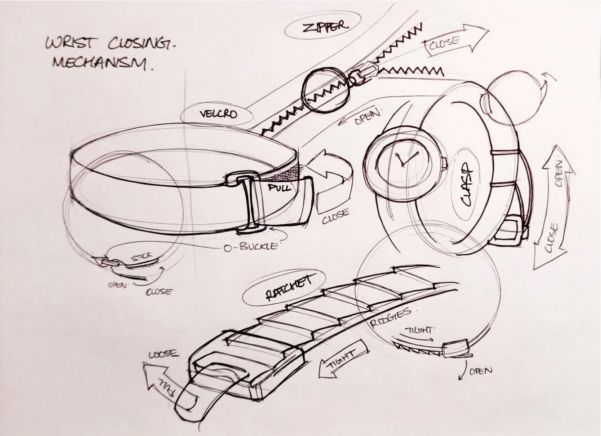
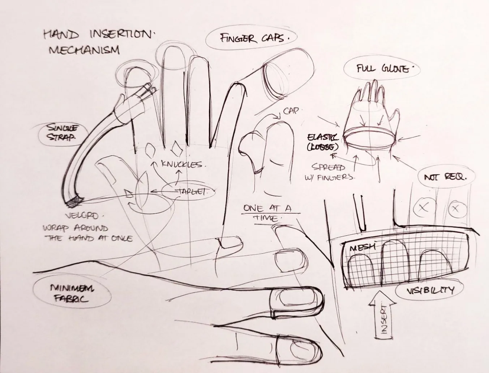
Different hand and finger insertion mechanism ideas were mapped out onto all the different wrist fastening/glove opening mechanisms using every permutation and combination. These combinations were then examined by the team for practicality and feasibility before finally being shortlisted for prototyping. The final three design concepts shortlisted for prototyping included overarching ideas for finger insertion and wrist insertion mechanisms.
Wrist fastening/glove closing mechanism
- Velcro
A Velcro wrist strap would help with adjustment and sizing issues, providing a large opening for the hand that can be tightened and fitted to the user’s wrist at will. Excess, stopping material on the Velcro strip would restrict the Velcro from coming out of the buckle, making it quick and easy to loosen and fasten without worry. This does not require a lot of pinch and pull strength and provides auditory feedback on being disengaged, and people have a mental model of how Velcro works. - Zipper
A zipper, another option for the fastening mechanism, requires much less pinch and pull strength that varies with the material and size of the zipper teeth. It is smooth and silent but does not offer much variability as compared to Velcro if used with a non-stretchy fabric. To resolve that issue, it was decided to use a crocheted fabric that expands along the periphery of the wrist to provide the correct tightness at the wrist.
Hand & Finger insertion mechanism
- Finger caps
Open-palmed gloves were determined to be a strong concept due to their benefits of visibility, addressing the issue of finger misplacement, and flexibility of fit. Finger caps, as shown in Figure 2.13, a structure that would rest over the top of the fingers, were chosen as a design that would theoretically provide an anchor for the glove while simultaneously needing as little finger adjustment motion as possible. The idea is that participants could focus on one finger at a time for insertion purposes.
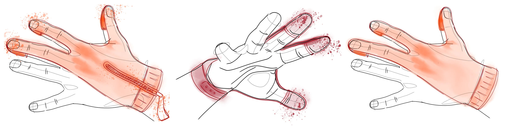
- Peekaboo
An alternate design idea to the finger cap style glove was to enhance finger insertion visibility on a familiar full glove design. This design, known as the Peekaboo glove, as shown in Figure 2.14, features the thumb, pointer, and the third finger having fully closed fingers, while the ring and pinky fingers are exposed for easier insertion. This closed glove design aims to improve visibility through hand-eye coordination by having a structured yet visible window. Visual feedback has been observed to aid movement tasks in individuals with PD due to lower proprioception . Since movement rigidity issues can cause fingers to potentially exit through the palm opening, a see-through mesh fabric was added to allow visibility while preventing fingers from coming out. This glove gets its name from the fingers hiding behind the scuba fabric for some distance and then suddenly reappearing behind the mesh fabric.
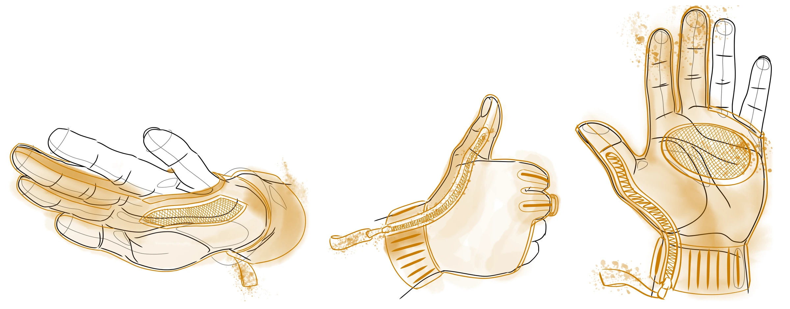
2.3.2Summary
Table 2.4 describes the final three glove concepts that were decided to be prototyped and evaluated:
| Sr. | Name | Hand & finger Insertion mechanism | Wrist Fastening mechanism |
|---|---|---|---|
| 1A | Finger Cap (Velcro) | Finger Cap | Velcro |
| 1B | Finger Cap (Zipper) | Finger Cap | Zipper |
| 2 | Peekaboo | Regular glove w/o ring and little fingers | Zipper |
2.4Prototype
With new design concepts on paper, in the Prototype Stage, I set out to realize those concepts by utilizing rapid prototyping processes. Rapid prototyping of the final selected design concepts was carried out through a combination of vector graphics, a laser cutter, and a computerized sewing machine, used to assemble the gloves by the textile designer, for user evaluation.
Each new glove concept design prototype was made in two sizes (regular and extra-large) using a rapid prototyping process. In total, six pairs of gloves were manufactured.
2.4.1Rapid Prototyping
To rapidly realize suitable designs from the brainstorming session for evaluation with participants, I decided to utilize a laser cutting process with an elastic synthetic fabric. Each concept was decided to be prototyped in two hand sizes: Regular and Extra Large. The hands of 2 team members were traced out on tracing paper for baseline references. Then the textile designer began by deconstructing the design concepts into individual pattern pieces on tracing paper. The design was scanned to digitize pattern pieces as a vector outline using Adobe Illustrator. To create fabric pattern pieces based on the design outline, I utilized a CO₂ laser cutter (Figure 2.15a) . Laser cutting involves concentrating a beam of coherent light onto a specific area in a material till it vaporizes; it is known to create precise cuts through computerized control. Laser cutting was chosen for this specific use case due to its high speed that enables rapid prototyping, prevention of fraying by fusing cut edges, and the capability to make smooth curves . The vector outline is loaded into the laser cutter client, and a synthetic scuba fabric (Figure 2.15b) (93% Polyester 7% Spandex) strip is loaded into the laser cutter. The outline is aligned such that the finger elements have limited stretch along the vertical grain of the fabric. The laser cutter is configured to cut mode with maximum power, and speed is configured by material thickness, resulting in uniform pattern pieces which are separated from the base fabric with fused edges as seen in Figure 2.15c. The same procedure is repeated with a modified outline for extra-large glove sizes across the designs. The laser-cut time ranged from 15-45 seconds based on the pattern piece outline. The individual pattern pieces were then integrated into respective glove prototypes using the Brother CS7205, shown in Fig 2.15d.
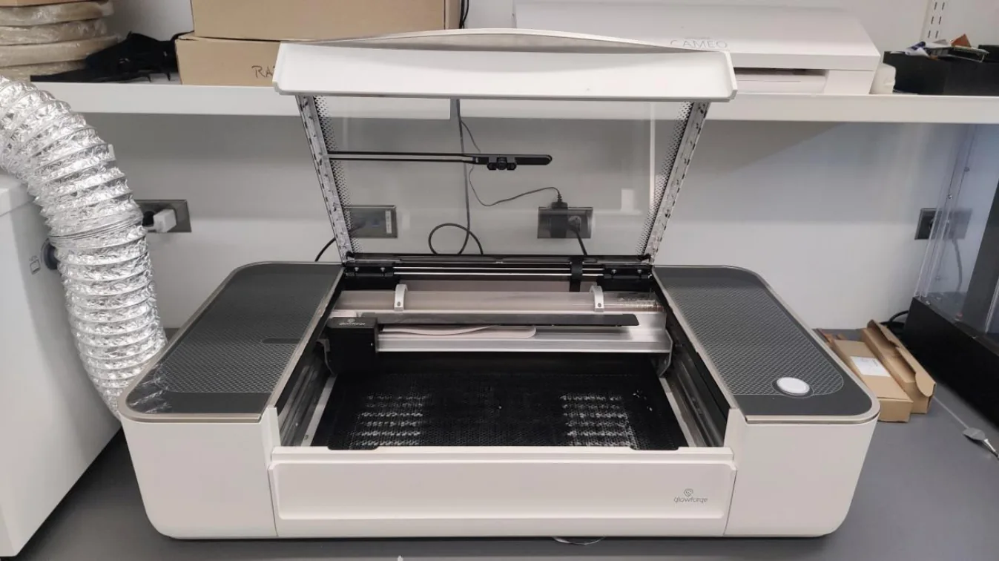
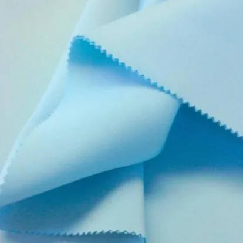
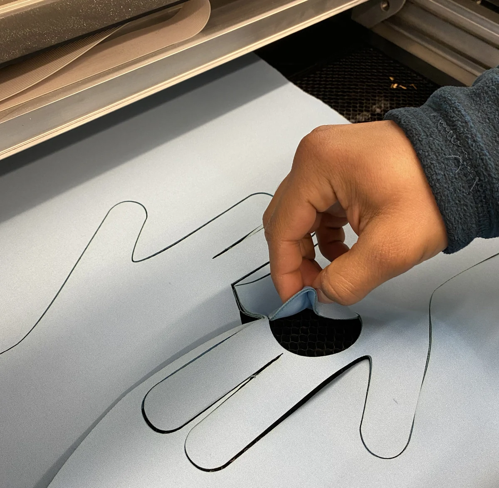
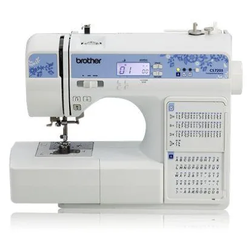
2.4.2Glove Construction Process
Fabric and Material
Based on the abovementioned required properties, I considered Scuba and Neoprene for the main glove fabric. The neoprene fabric was thicker than necessary, and the resulting rigidity would offer an excess of resistance while collecting data using sensors. Scuba material was the better option, a fabric that has a smooth finish, medium rigidity, flexibility, and optimum thickness. Since it is made from synthetic fiber, it can be easily cut using a laser cutter. A double-knit polyester spandex was used for sections of the glove that required more stretch (the finger caps and certain wristbands). Vinyl (PVC content) was selected as a base for potential finger pressure sensing elements.
Assembly
The process of creating gloves required multiple steps for each prototype. It began with specifically sized patterns that were used to laser cut the glove pieces, followed by assembling smaller elements (Finger caps), and finally constructing the complete prototype. Figure 2.19 shows the fabric pieces being assembled by the textile designer using a Brother CS7205 sewing machine.
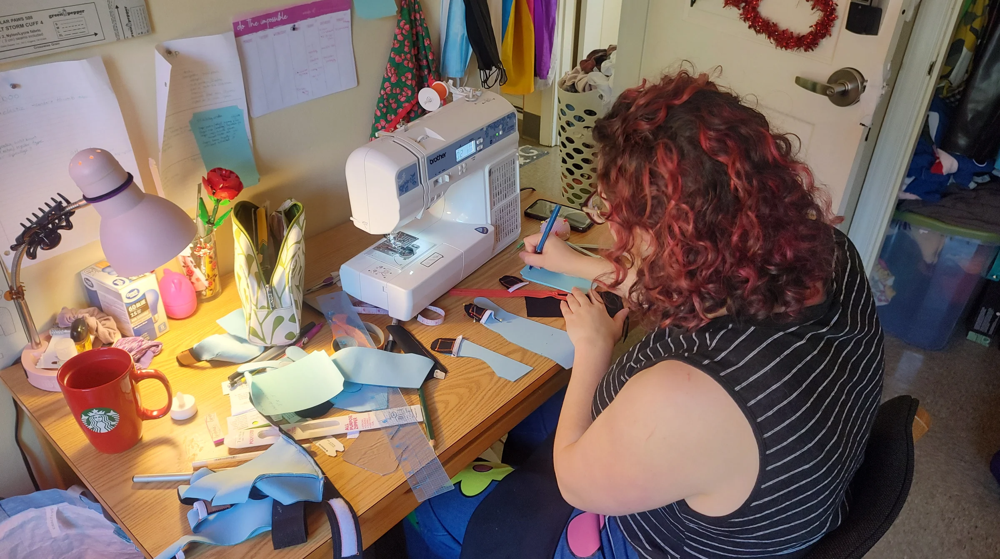
Finger caps
For all Finger cap gloves (prototypes 1A: Velcro wristband and 1B: Zipper wristband), the base glove construction remains consistent. The difference in design between 1A and 1B is the wrist fastening mechanism. For the glove base, the pieces were as follows: one main glove piece (scuba), one separate thumb piece (scuba), three spandex finger caps, three vinyl finger pads, three pieces of fold-over elastic binding, and the Velcro strap used as the wristband.
The textile designer began construction by attaching vinyl pads onto the spandex finger caps with a zigzag stitch. Fold-over elastic was used to bind the edge of the finger cap to add structure and finishing. After the finger pads and caps were secured, they were sewn onto the main glove pieces, and the thumb piece was attached to the main finger piece. From here, prototype 1A was completed by stitching the Velcro strap wrist mechanism to the bottom edge of the glove (Figure 2.20 (a), (b)).
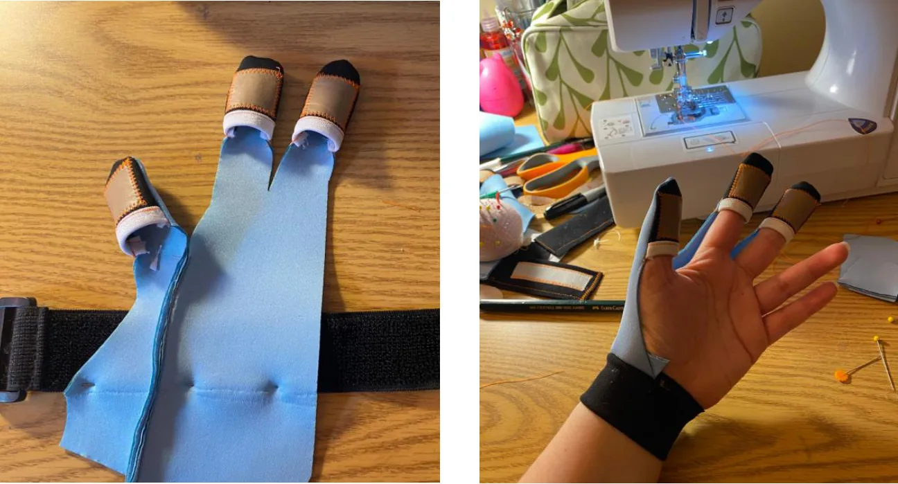
Prototype 1B required an extra step: the insertion of a zipper into the center of the glove, the edges of which were bound with the fold-over elastic for stabilizing and finishing purposes. A rectangular piece of spandex was then attached to the bottom of the glove in a continuous loop, ending at either side of the zipper. This would allow the zipper to serve as a wrist opening, remaining fitted to the wrist when the zip was closed (Figure 2.21).
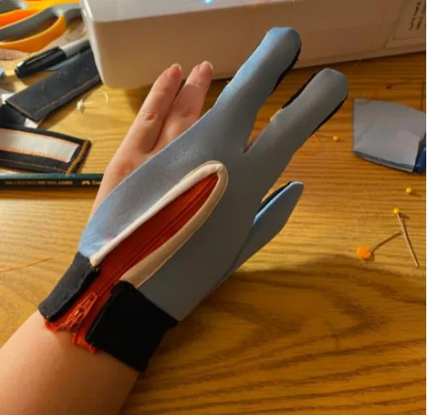
For the XL size of both glove prototypes, the pattern was sized up accordingly. The finger cap was increased in length, but the finger pads stayed the same.
Peekaboo
The peekaboo glove was also constructed from multiple pieces, in a specific order. The textile designer referenced a commercial glove pattern, Polar Paws #508, to better understand full glove construction, adapting the pattern to the study prototype design parameters. The pieces were laser cut out: one back piece, one front piece with a hole in the center of the palm, one long thin strip used for creating the gusset (box-like structure in between fingers), one square of stretch mesh for the peekaboo structure, two pieces of fold-over elastic for binding the opening for the ring and pinky fingers, as well as for binding the peekaboo hole edges, and lastly, one all-purpose zipper.
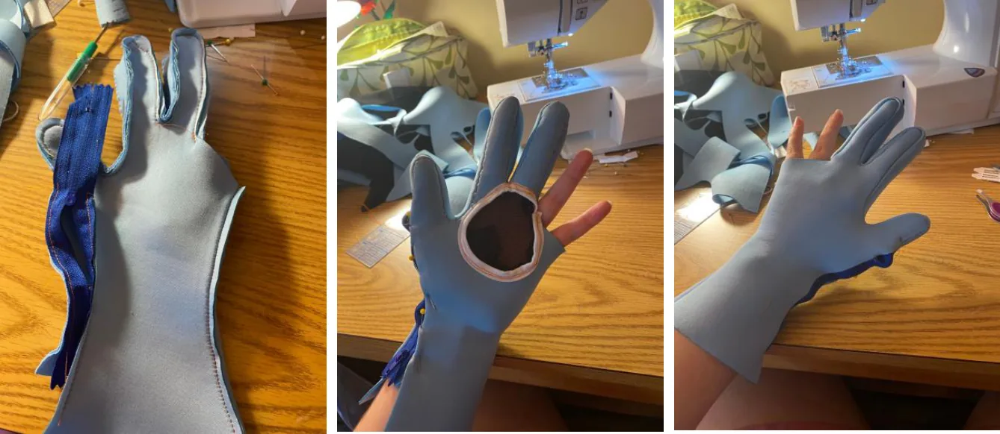
For construction, the first step was to bind the opening for the ring and pinky fingers, as well as the edges of the peekaboo opening, with fold-over elastic. This was followed by fixing the mesh on the underside of the opening and trimming excess fabric on the edges. After this, the gusset was sewn into both sides of the main glove, followed by the zipper (sewn into the seam on the outside of the thumb).
For the XL size gloves, all patterns were sized up accordingly. The finger cap size was increased in length, but finger pads stayed the same. In hindsight, increasing their width would have been a benefit.
For the next phase, where the gloves were to be tested out with the participants, it was decided to test their performance alongside commercially available gloves. Three commercially available gloves were chosen to be compared with the prototypes, and their comparison is given in Table 2.5.
| Glove Design | Vinyl Glove Figure 2.23 (a) | Knit Glove Figure 2.23 (b) | Snow Winter Glove Figure 2.23 (c) | Finger caps Velcro (1A) Figure 2.24 (a) | Finger caps zipper (1B) Figure 2.24 (b) | Peekaboo Figure 2.24 (c) |
|---|---|---|---|---|---|---|
| Fabric | Vinyl | Knit outer shell Fleece lining | Windbreaker polyester Fleece lining | Scuba base Spandex finger cap Vinyl finger pads | Scuba base Spandex finger cap Vinyl finger pads | Scuba base Fold-over elastic binding |
| Fingers & Thumb | Closed fingers (5) Continuous thumb piece with fingers | Closed fingers (5) Continuous thumb piece with fingers | Closed fingers (5, with gusset) Separate thumb piece | Finger caps with vinyl pads (3) Separate thumb piece | Finger caps with vinyl pads (3) Separate thumb piece | Closed fingers (5, with gusset) Continuous thumb piece with fingers |
| Structure/3-Dimensionality | None (lies flat) | None (thicker fabric but 2D when flat) | Gussets in between fingers | Slightly rigid finger caps | Slightly rigid finger caps | Gussets in between fingers |
| Wrist/Closure & Palm | Stretch (non-opening insert) Closed palm | Stretch (non-opening insert) Closed palm | Rigid (non-opening insert) Closed palm | Velcro strap Open palm | Zipper and stretch wristband Open palm | Zipper on the thumb in stretch fabric Closed, see-through mesh palm |
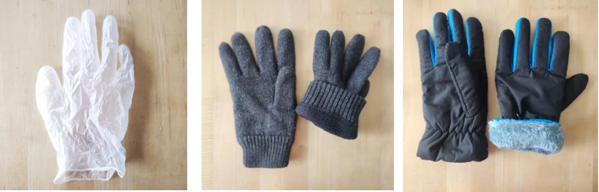
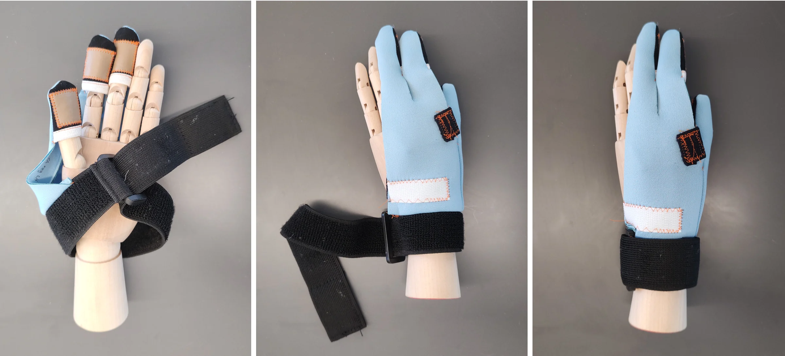
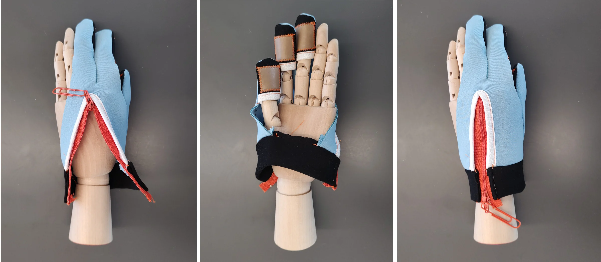
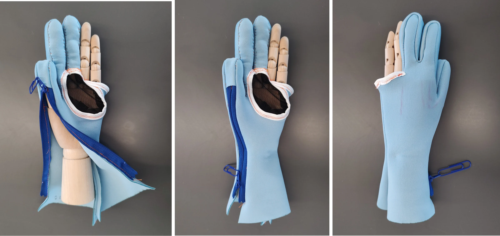
2.5Test
The final three prototypes (Finger Cap (Velcro) Gloves, Finger Cap (Zipper) Gloves, and Peekaboo) were run through ten study participants for their feedback. They were asked to “Think Aloud” while they tried and compared three commercially available gloves and three prototype gloves. Participants were asked a series of questions (Appendix 2) after they tried each glove on.
Based on their feedback and the answers, I sought to understand whether the newly designed glove prototypes addressed the usability issues associated with their movement symptoms and what further improvements can be made to them.
2.5.1Trial Design
In the prototype design trial study, we started by enquiring of the participants about their basic information and last medication intake (Table 2.6) to understand their present symptom condition before the evaluation of the gloves. The participants were presented first with three commercially available gloves and then the three prototype gloves which they tried one after the other. They were first made to try out the commercially available gloves so that the prototypes could be compared to the commercial ones while they were being tried on. Participants were asked about their first impressions of the gloves before the trial, their wearing and removing time of the gloves was recorded and their overall feedback was noted down. By the end of the study, they were asked to rank all 6 gloves from best to worst in terms of their usability.
| P No. | Age | Sex | Years with PD | Medication (hrs) | MoCA |
|---|---|---|---|---|---|
| P2 | 65 | M | 5 | 3 | 26 |
| P3 | 54 | F | 3 | 1.5 | 28 |
| P4 | 79 | M | 1 | 4 | 28 |
| P5 | 56 | F | >1 | 2 | 28 |
| P6 | 75 | F | 3 | 3 | 23 |
| P7 | 74 | F | 6 | NA | 25 |
| P8 | 77 | M | 22 | 3 | 14 |
| P9 | 53 | M | 11 | 1 | 27 |
| P10 | 68 | M | 15 | 1 | 27 |
| P11 | 77 | F | 3 | 3 | 22 |
2.5.2Procedure
Three participants from the Empathy stage study and seven more participants were invited to participate in this follow-up study to evaluate the three newly designed glove prototypes along with the three commercially available ones. The participants were asked to be seated while the study team passed them one set of the closest fitting gloves one at a time for evaluation. The trial and evaluation started with the multipurpose disposable translucent vinyl gloves. The second was the knitted woollen gloves with a soft inner lining made of fleece which offered mild insulation. The third and final in the commercial gloves category were the thick, stiff, and waterproof snow gloves. For the prototypes, first the Finger Caps and then finally Peekaboo were evaluated.
The gloves were passed to the participant on an empty tabletop, one at a time. They were encouraged to touch, feel, and comment on specific elements of the gloves from time to time if they could not express themselves openly. They were first asked to comment on visual features and their perception of the gloves. Following this, they were asked to put the gloves on while the whole study was being recorded from multiple viewpoint video cameras. Users generally do not read the instruction manual for most day-to-day products. I wanted to see if they would be able to wear the gloves properly without instructions. In case they were unable to identify the correct wearing mechanism for a certain type of glove for a minute, only then were they verbally instructed on how to put them on, by a team member. In such cases, the wearing time, after the instructions were provided, was recorded (Table 2.7). The study team inquired of the participants regarding the issues they experienced with each glove (conveyed pain points) and also noted down their feedback with the help of a questionnaire (Appendix 2) which was administered after every glove was tried on. They were asked to rate different aspects of the glove on a scale of one to ten, one being difficult or bad and ten being easy or good. The average ratings of all the participants for all the gloves are given in Table 2.8. In the end, the participants were presented with one hand of each glove on the table, together, and were asked to rank all of the gloves on their overall performance (Table 2.9). After the study, the videos were thoroughly analyzed to extract participant quotes, wearing, and removing timings to obtain deeper insights.
2.5.3Results
Participant 2 was observed to have severe tremors and these tremors affected the trial process but gave very interesting insights. Time to wear and remove the gloves by P7 was not recorded since their left hand was crooked, devoid of sensation, and did not work at all. They took a considerably longer time to try the gloves on due to the condition of their left hand coupled with arthritis which made their fingers stiffer and thicker than usual. However, their feedback on the gloves was recorded.
Time
As seen in Table 2.7, most of the commercially available gloves took less time to wear and remove as compared to the newly introduced glove prototypes. The vinyl glove took the most time to wear among the commercially available gloves due to its lack of structure and slippery surface.
Show data for every participant
| P No | Transparent Vinyl Gloves On | Off | Knit Winter Gloves On | Off | Snow Gloves On | Off | Finger Cap (Velcro) Gloves On | Off | Finger Cap (Zipper) Gloves On | Off | Peekaboo On | Off |
|---|---|---|---|---|---|---|---|---|---|---|---|---|
| P2 | 120 | 20 | 23 | 5 | 77 | 4 | 240 | 47 | 132 | 30 | 90 | 15 |
| P3 | 25 | 13 | 24 | 5 | 13 | 4 | 72 | 60 | 46 | 20 | 30 | 20 |
| P4 | 36 | 30 | 10 | 10 | 22 | 4 | 65 | 15 | 94 | 24 | 50 | 21 |
| P5 | 13 | 4 | 7 | 4 | 7 | 5 | 40 | 15 | 30 | 8 | 15 | 7 |
| P6 | 15 | 20 | 6 | 3 | 10 | 4 | 93 | 8 | 40 | 10 | 15 | 10 |
| P8 | 74 | 28 | 16 | 9 | 20 | 8 | 96 | 15 | 100 | 32 | 20 | 20 |
| P9 | 30 | 7 | 14 | 7 | 15 | 14 | 95 | 17 | 90 | 25 | 20 | 24 |
| P10 | 50 | 7 | 10 | 4 | 10 | 5 | 90 | 14 | 84 | 30 | 15 | 13 |
| P11 | 40 | 14 | 25 | 5 | 20 | 5 | 90 | 28 | 54 | 12 | 35 | 60 |
| AVG | 44.7 | 15.9 | 15.0 | 5.8 | 21.5 | 5.9 | 97.9 | 24.3 | 74.5 | 21.2 | 32.2 | 21.1 |
The snow gloves and knit gloves seemed to take participants the least amount of time to remove. Among the prototypes, Finger Caps (Velcro) and Finger Caps (Zipper) were similar in structure and mechanics with the only difference being in the wrist closing mechanism. It was observed that participants were able to put on the next subsequent prototype (1B-Zipper) faster once they familiarized themselves with (1A-Velcro) how to wear them. Wearing and removing time was reduced by half for the Finger cap (Zipper) gloves when compared to Finger Caps (Velcro) and the timings were comparable to the vinyl gloves. Participants had a good understanding of how to wear and remove the commercially available gloves, but it was a little difficult with the new glove prototypes as they had tried them for the first time, that too only once. This suggests that once the mechanics are understood and a mental model of how to wear the gloves is established in the brain, it becomes easier to wear the new prototypes. Since I had the participants try out these prototypes just once, I hope the time to wear and remove will decrease after multiple trials/usage. Out of the 3 prototypes, Peekaboo took an average time of 32 seconds to be worn and an average time of 21 seconds to be removed. It might be due to the familiar design of the Peekaboo gloves which enables participants to utilize mental models from earlier gloves. I also observed that the finger-cap gloves had alignment issues over knuckle points where the sensors would typically be placed.
Score
Gloves that resemble the commonly available glove design are easy to wear as well as remove given the user’s mental model. The zipper feature in the Peekaboo gloves made them the easiest to wear out of all the gloves and the second-easiest to remove compared to any other prototype. Peekaboo had the best fit and freedom of movement out of all the gloves but comfort-wise, they were second to the Knit Winter gloves. Hence, as the scores in Table 2.8 and the overall ranking in Table 2.9 suggest, Peekaboo gloves performed the best out of all the prototypes, and they also compete closely with the commercially available Knit winter gloves.
| Average Score of | Transparent Vinyl Gloves | Knit Winter Gloves | Snow Gloves | Finger Cap (Velcro) Gloves | Finger Cap (Zipper) Gloves | Peekaboo Gloves |
|---|---|---|---|---|---|---|
| Ease of understanding to wear | 9.5 | 9.5 | 9.8 | 5.6 | 7.6 | 9.5 |
| Ease of wearing | 7.3 | 8.0 | 7.1 | 6.0 | 7.0 | 8.1 |
| Fit | 6.7 | 6.9 | 6.0 | 6.2 | 7.2 | 7.2 |
| Freedom of movement | 7.5 | 7.3 | 6.1 | 7.5 | 7.7 | 8.0 |
| Comfort | 6.9 | 8.0 | 6.4 | 6.3 | 7.2 | 6.8 |
| Tactile feel | 7.0 | 7.9 | 6.8 | 7.3 | 7.5 | 6.2 |
| Ease of understanding to remove | 9.5 | 9.7 | 9.8 | 8.2 | 8.7 | 9.0 |
| Ease of removing | 9.6 | 9.6 | 9.1 | 7.2 | 7.3 | 7.2 |
| P No | Transparent Vinyl Gloves | Knit Winter Gloves | Snow Gloves | Finger Cap (Velcro) Gloves | Finger Cap (Zipper) Gloves | Peekaboo Gloves |
|---|---|---|---|---|---|---|
| P2 | 6 | 4 | 5 | 2 | 3 | 1 |
| P3 | 2 | 5 | 6 | 3 | 1 | 4 |
| P4 | 1 | 5 | 6 | 4 | 3 | 2 |
| P5 | 6 | 2 | 1 | 4 | 5 | 3 |
| P6 | 6 | 5 | 4 | 2 | 1 | 3 |
| P7 | 4 | 2 | 3 | 6 | 5 | 1 |
| P8 | 4 | 3 | 6 | 5 | 2 | 1 |
| P9 | 3 | 1 | 2 | 5 | 6 | 4 |
| P10 | 3 | 1 | 6 | 2 | 5 | 4 |
| P11 | 5 | 1 | 2 | 4 | 3 | 6 |
| AVG | 4.0 | 2.9 | 4.1 | 3.7 | 3.4 | 2.9 |
Qualitative Feedback
Transparent vinyl gloves feedback
As observed by the team members and from the feedback given by the participants (Figure 2.27), the Transparent vinyl gloves were found to be loose at the wrist and were difficult to insert fingers in as they lacked structure. The fingers on the gloves were too long for the participants, making them loose at the fingertips. Participants had a hard time adjusting their fingers once they got the two fingers in one pocket.
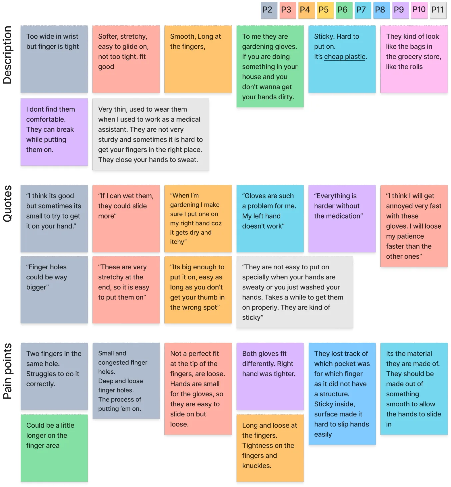
Knit winter gloves
The Knit winter gloves took considerably less time to wear and were easy to slide hands in due to the smooth fleece lining, thanks to the ribbed cuffs and hem which allowed the mouth of the glove to open according to the user’s hand. Also, the knit material provided a little structure to the glove. Participant feedback can be seen in Figure 2.28.
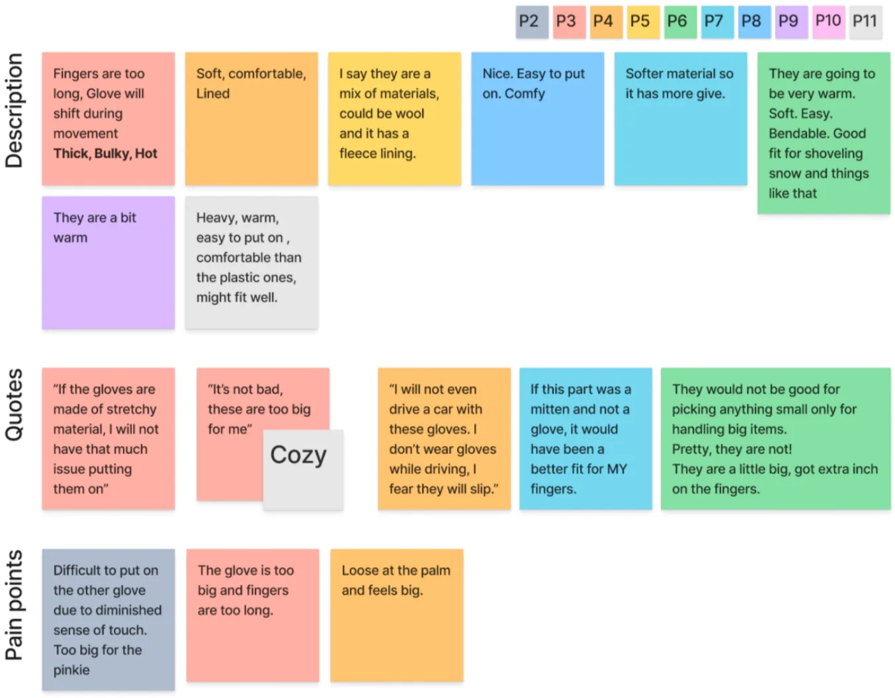
Snow gloves
The snow gloves didn’t have any flexible fabric and used denser material making them rigid. The wrist area did not stretch enough making it difficult for the hand to slide in. Participant feedback, as seen in Figure 2.29, suggested that the gloves offered very little freedom of movement, which would affect the gloves’ capability in assessing fine finger movement tasks when assembled with the sensors.
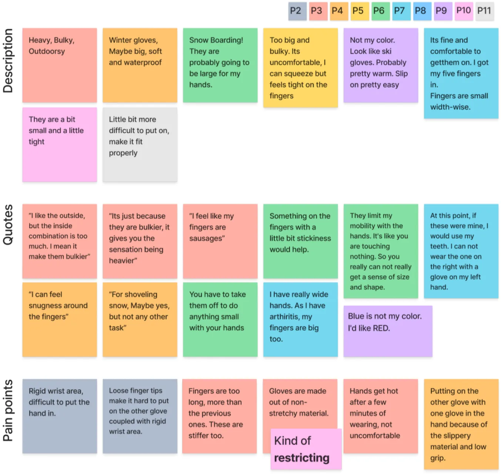
Finger Cap (Velcro) glove
As per the participant feedback (Figure 2.30), the Velcro wrist strap was found to be tight, and difficult to handle and pull apart. The Velcro was itself elastic and had a larger contact area; it was tight and difficult to pull apart as it was firmly connected and was stretching with the pulling action. Participants seemed to have considerable issues aligning the finger cap glove design and 6 out of 10 participants had worn it incorrectly, without instructions, when tried on the first time.
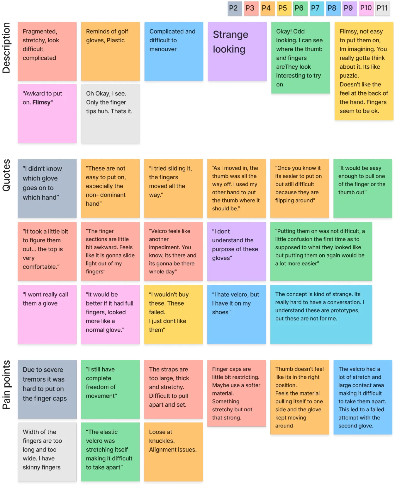
Participants found the finger cap design to be more challenging because of its open palm design which was unfamiliar. Less material on the palm side of the glove offered visibility, comfort, and breathability while the tradeoff deprived the glove of structure and made it difficult to position the finger in the right place. As per the intended wearing mechanics for finger caps, the user has to start by sliding their hand in, fasten the wrist and then start putting on the finger caps by stretching and placing them over the respective fingers. This was not observed in any participants in practice, however, potentially due to a lack of a clear mental model around wearing an open palm glove. The participants picked the glove up in the air and attempted to wear it without either table support or support of the body. The difficulty reduced after they received the instructions and retried, though the lack of structure still introduced usability problems.
Finger Cap (Zipper) glove
The finger cap glove design did not perform so well timewise, but other aspects such as freedom of movement, comfort, and feel, were accepted by the participants as the gloves did not take away all of the sensations from their fingers. They scored well in some respects like comfort, tactile feel, and ease of removal. Once the user knew how to wear 1A, it took them less time to wear 1B. Major improvements would be needed if the glove is to be made ideal for wearing for longer durations of the day. The participants, in their feedback (Figure 2.31), found the zippers to be much easier as a wrist fastening mechanism since it requires just one pinch and pull motion compared to the wrapping motion of the Velcro.
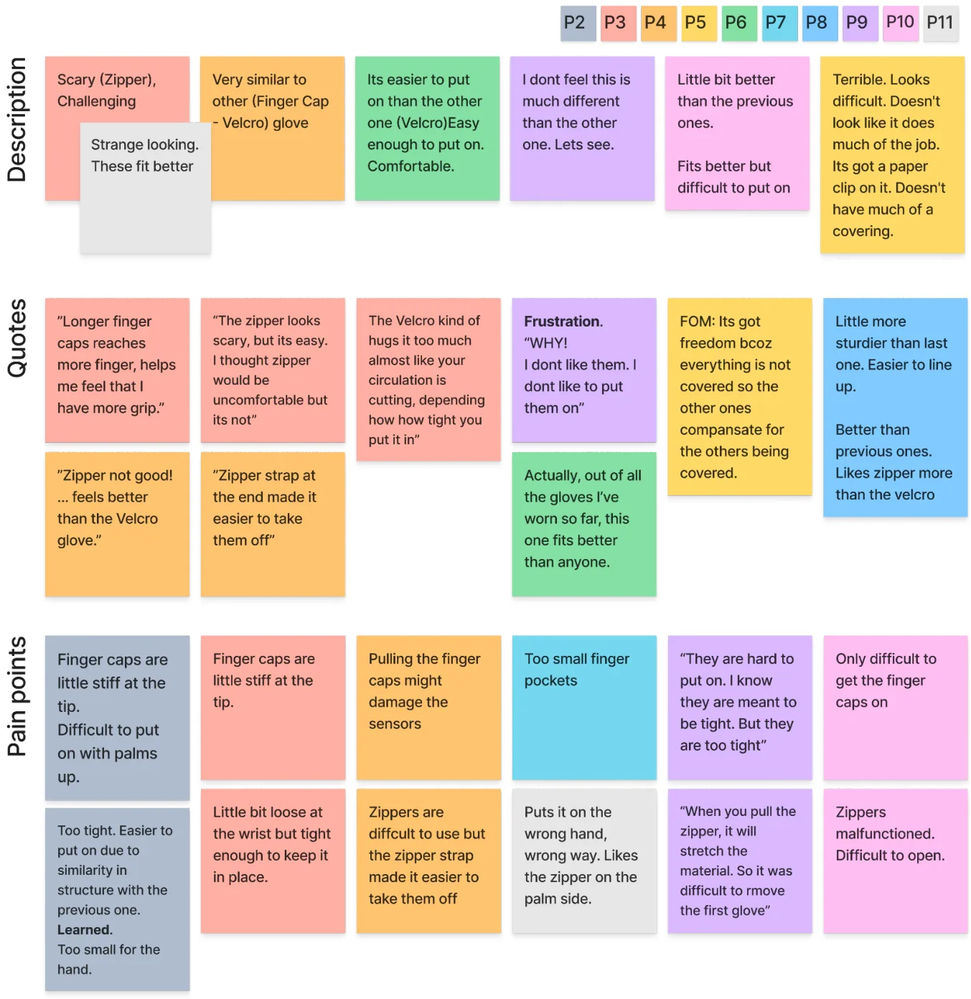
Peekaboo glove
The Peekaboo glove design was ranked the best among all the prototypes by the participants. P2, who had difficulty with most other gloves, was overwhelmingly positive towards this design. The paper clip extension on the zipper tab improved participant control while wearing the glove and was well received by every participant. From the participant feedback (Figure 2.32) I learned that the glove was comfortable and fit snugly at the palm and back of the hand but was loose at the fingers. They feared slipping if they held objects while wearing these gloves.
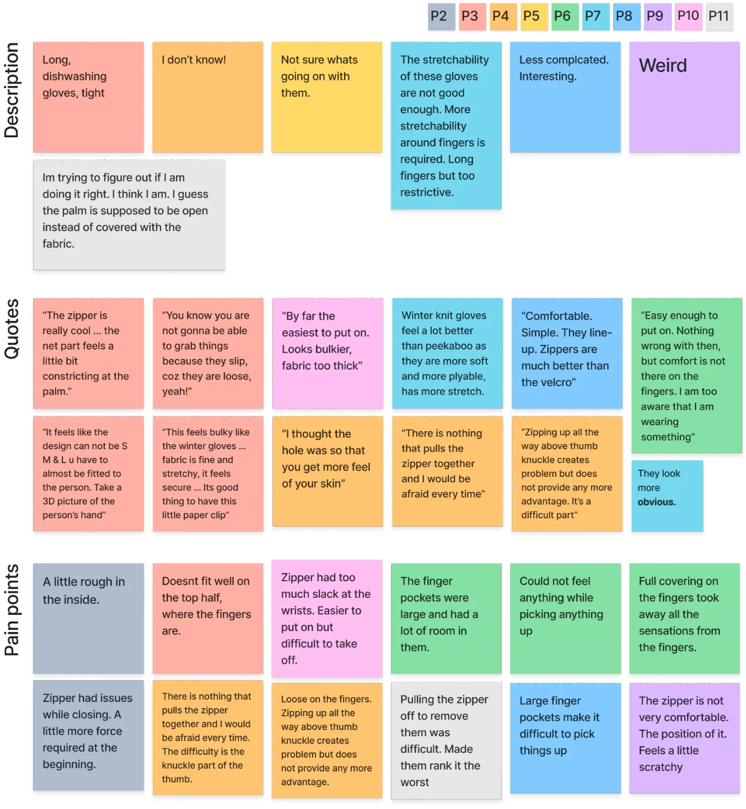
The stretch mesh at the palm offered visibility of their fingers before inserting them into the pockets and certain participants were observed to view their fingers while wearing. Due to the zipper end being too high on the thumb, the glove mouth opens more than required, as a result of which the zipper gets stuck at the thumb knuckle while closing, so a greater force is required. Shortening the zipper length might fix the problem.
2.5.4Summary
It was difficult for the participants to put on any of the prototypes easily on the first attempt as they were encountering them for the first time. It took them a while to figure them out, but once they got one glove on, the other glove became easy to wear. On the contrary, commercially available gloves were quicker and easier to put on given the preexisting mental model in the mind of users.
When talking about the prototype gloves, scores, feedback, and wearing and removing time suggested that Peekaboo outperforms the Finger cap design. Both designs had their pros and cons but for this use-case scenario, since the Peekaboo was well received by the participants, it was decided to take it forward for further design improvements. User feedback and comments for all the gloves are going to help refine the design.
2.6Ideate & Prototype 2.0
Learnings from the Test stage were carried forward to come up with an improved version of the best-performing prototype, Peekaboo gloves. It was aimed that the new design should try to improve on all the drawbacks and have the best features of all the six gloves. The new gloves were realized using the same rapid prototyping technique.
The designers in the team discussed and sketched out fresh ideas. Elements from different gloves were incorporated into one new design, as seen in Figure 2.33.
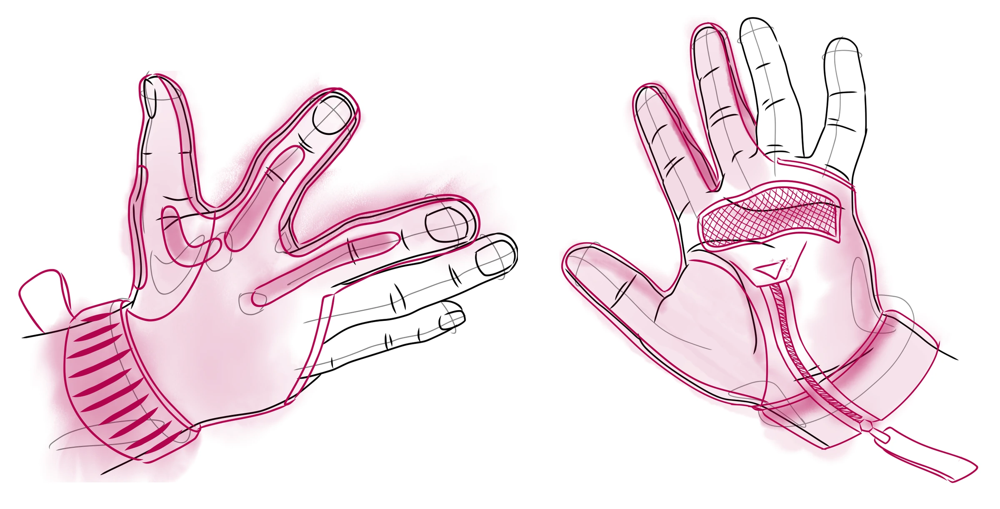
2.6.1Improvements
- A new fabric color of royal blue and satin black was chosen to give it a more professional look. The old faded light blue color was dull and did not incite excitement or interest. Hence this prototype was named ‘Peekablue’ (Figure 2.34).
- The zipper location was changed from the side of the thumb to the front of the palm. To bring the zipper together, the user now can simply squeeze their hand by the thumb a bit and easily zip the glove.
- The zipper style and the material were also changed from plastic coiled to thick molded plastic zippers. It gave the zipper a smooth and easy flow as it came with bigger teeth and pull.
- Leather pull tabs on the zipper were installed instead of paper clips.
- A ribbed and hemmed cuff inspired by the knit winter gloves offered flexibility and enough tightness at the wrist once zipped.
- The shape of the wire mesh was changed from a circle to a rectangle with rounded corners for more visibility with a little compromise on the glove strength.
- A different pattern piece for the thumb was drawn for this version of the prototype to give the Peekablue more 3D structure. Along with that, gussets were added for every finger.
- Finger pockets were made broader at the base for easy finger insertion and thinner at the tips to be stretched out for correct tightness and fit. To enable this, the fabric stretch direction was aligned along the width of the fingers.
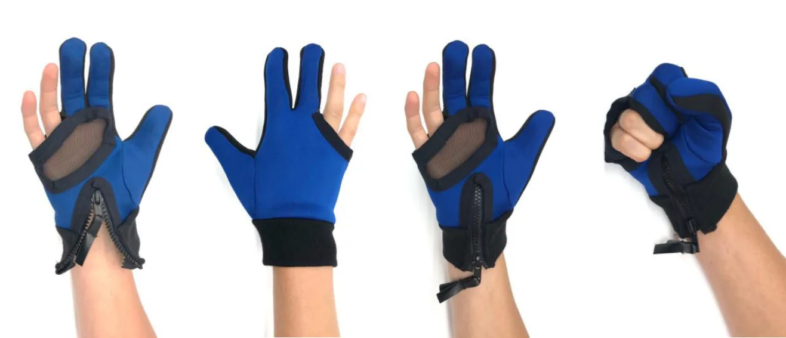
2.7Test 2.0
After improvements in the Peekaboo glove design, the latest version, Peekablue, was ready to be tested out for the second round of improvements and design validation. Participants were asked the same set of questions from the questionnaire (Appendix 2) administered in the first test stage.
Twenty new participants were recruited for this fifteen-minute testing session. Most of the modifications made in the prototype improved its usability multifold, making the design deployment-ready.
2.7.1Trial Design
The participants were presented with two sizes of Peekablue glove design and were asked to choose the closest fitting size. Before trying the gloves on, they were asked to give their thoughts about their first impression of the gloves. Subsequently, they were asked questions from the question set (Appendix 2). The data was recorded in the form of a Likert scale rating for different aspects of the glove, video recording, and time to wear and remove the gloves.
2.7.2Procedure
I followed the exact same procedure as I did for the previous test phase, this time with twenty new participants, with their details mentioned in Table 2.10. I recorded information such as the last medication intake time, first impressions of the glove, thinking aloud while trying them on, noting down the wearing and taking off time, questionnaire, and asking for feedback. Video recordings were analyzed to extract the qualitative findings and those findings were documented on sticky notes which were then classified into categories like Critiques, Room for improvement, Appreciation, and Miscellaneous.
| P No. | Age | Sex | Years with PD | Medication (hrs) | MoCA |
|---|---|---|---|---|---|
| P4 | 79 | M | 1 | 4 | 28 |
| P5 | 56 | F | >1 | 2 | 28 |
| P7 | 74 | F | 6 | NA | 25 |
| P8 | 77 | M | 22 | 3 | 24 |
| P10 | 68 | M | 15 | 1 | 27 |
| P11 | 77 | F | 3 | 3 | 22 |
| P12 | 72 | M | 1 | 3.5 | 21 |
| P13 | 63 | M | 11 | 3 | 24 |
| P14 | 77 | M | 4 | 3.5 | 24 |
| P15 | 72 | M | 10 | 2.5 | 23 |
| P16 | 67 | M | 3 | 3 | 22 |
| P17 | 55 | F | 3 | 2.5 | 27 |
| P18 | 81 | M | 3 | 5 | 25 |
| P19 | 53 | F | 14 | 0.25 | 30 |
| P20 | 72 | F | 3 | 1.5 | 23 |
| P21 | 74 | F | 2 | 2 | 29 |
| P22 | 57 | M | 4 | 2.75 | 22 |
| P23 | 63 | F | ~3 | 0.75 | 26 |
| P24 | 63 | F | 4 | 4 | 23 |
| P25 | 59 | F | 0.5 | 3 | 27 |
2.7.3Results
As seen in Table 2.11, the Peekablue was given a score of 8 or above in all of the aspects except for fit and aesthetic appeal. Since it was a prototype, form and color were not explored in detail in this study. Fit, however, seems to be the biggest challenge that needs to be solved. Participants had different shapes, sizes, proportions, impairments, and dexterity of the hands. It was not possible to create a custom size for every participant, yet.
| P No | Understand to Wear | Ease of wearing | FOM | Fit | Comfort | Tactile feel | Aesthetic appeal | Ease of removing | Understand to remove |
|---|---|---|---|---|---|---|---|---|---|
| P4 | 10 | 10 | 10 | 10 | 10 | 10 | 10 | 10 | 10 |
| P5 | 10 | 8 | 8 | 8 | 8 | 10 | 8 | 10 | 10 |
| P7 | 10 | 7 | 6 | 5 | 8 | 8 | 6 | 9 | 10 |
| P8 | 9 | 10 | 10 | 8 | 9 | 9 | 8 | 9 | 10 |
| P10 | 10 | 10 | 8 | 4 | 6 | 3 | 7 | 10 | 10 |
| P11 | 10 | 10 | 9 | 7 | 9 | 9 | 6 | 10 | 10 |
| P12 | 9 | 10 | 9 | 7 | 9 | 9 | 9 | 10 | 10 |
| P13 | 8 | 9 | 10 | 10 | 10 | 10 | 8 | 7 | 10 |
| P14 | 9 | 8 | 9 | 8 | 8 | 10 | 7 | 10 | 10 |
| P15 | 8 | 8 | 9 | 7 | 8 | 8 | 9 | 9 | 9 |
| P16 | 9 | 8 | 7 | 8 | 7 | 7 | 5 | 8 | 10 |
| P17 | 10 | 8 | 10 | 10 | 8 | 9 | 1 | 8 | 10 |
| P18 | 10 | 10 | 10 | 10 | 10 | 10 | 1 | 9 | 10 |
| P19 | 10 | 10 | 10 | 8 | 10 | 10 | 1 | 10 | 10 |
| P20 | 10 | 10 | 10 | 5 | 8 | 10 | 8 | 10 | 10 |
| P21 | 10 | 9 | 9 | 6 | 8 | 9 | 9 | 10 | 10 |
| P22 | 7 | 10 | 10 | 7 | 10 | 10 | 10 | 10 | 10 |
| P23 | 10 | 10 | 8 | 8 | 9 | 9 | 10 | 10 | 10 |
| P24 | 10 | 9 | 9 | 6 | 8 | 6 | 8 | 9 | 10 |
| P25 | 7 | 7 | 7 | 3 | 5 | 5 | 5 | 8 | 8 |
| AVG | 9.30 | 9.05 | 8.90 | 7.25 | 8.4 | 8.55 | 6.80 | 9.30 | 9.85 |
Time
From Table 2.12, for Peekablue gloves, wearing time averaged out to 24.32 seconds and removing time to 10.15 seconds. In the improved version of Peekaboo, the Peekablue, wearing time was reduced by a third, and removing time was halved. These reduced wearing and removing times were an indicator of better usability of the gloves in terms of speed and ease for this particular use case for Parkinson’s Disease patients who deal with hand tremors daily.
Show data
| P No | On | Off | P No | On | Off | P No | On | Off | P No | On | Off |
|---|---|---|---|---|---|---|---|---|---|---|---|
| P4 | 30 | 10 | P12 | 28 | 8 | P17 | 20 | 9 | P22 | 13 | 8 |
| P7 | 54 | 12 | P13 | 30 | 13 | P18 | 17 | 12 | P23 | 23 | 9 |
| P8 | 30 | 12 | P14 | 20 | 9 | P19 | 10 | 10 | P24 | 25 | 8 |
| P10 | 17 | 8 | P15 | 35 | 10 | P20 | 30 | 12 | P25 | 10 | 5 |
| P11 | 21 | 10 | P16 | 24 | 14 | P21 | 25 | 14 | AVG | 24.32 | 10.15 |
2.7.4Feedback
All the participants’ feedback was noted down on sticky notes and then grouped into 4 heads, namely Critique, Room for Improvement, Appreciation and Miscellaneous. This feedback can be seen in Figure 2.35 (a), (b), (c) and (d).
Critique
Bad fit and wrong-sized gloves were the feedback that I received from most of the participants. The same pair of gloves was too tight for some but loose for others and was long at fingers but tight at wrists.
Room for Improvement
The fit can be improved by taking separate measurements for all the participants. 3D scanning the user’s hand and then obtaining hand dimensions from it to be fed into an automated pattern generating system would be required. Other than that, the zipper needs to be lined with a soft fabric so that the user doesn’t get their skin caught in the zipper.
Appreciation
For some participants, the gloves function the way they should. They found the gloves comfortable, simple to wear and take off, and aesthetically appealing. Zippers with big leather pull tabs made the process of wearing and removing way easier.
Miscellaneous
Participants found the gloves to be strange looking and the first question they asked was regarding the 2 missing fingers. The mesh fabric was mistaken for ventilation, but it was intended as a tool that increases visibility while wearing gloves. Ventilation is thus a surprise feature. The color of the gloves had mixed feedback. It differs from person to person depending on their personal preferences. Different color options can cater to the users, for a better experience.
2.7.5Conclusion
Peekablue gloves performed well as suggested by the quantitative data. They scored better than the previous version in various aspects. The qualitative data indicates a strong need for glove customization where the user’s hand dimensions are recorded for correct fit, which in turn would enable accurate sensor placement.
2.8Summary
The team initiated the design process with the Empathy stage where I understood the motor capabilities of PwPD through keen observation and affinity mapping. Once the problem was well understood by the team, problem areas and opportunities were identified, and new ideas were generated in the brainstorming sessions. Sketches and quick mockups helped the team members to express and build up the ideas. The final three ideas were prototyped using a rapid manufacturing technique which made the production of the concept gloves considerably fast. The glove concepts were tested out with a pool of ten participants for feedback and to find room for improvement. The best performing glove design was further improved upon and was tested out with twenty participants for validation. The study concludes with the final glove prototype, Peekablue, receiving constructive feedback from the participants. The gloves performed better than all the gloves tested out throughout the study.
Discussion
At various stages of the study, I gained insights into usability factors for individuals with PD. While certain design concepts such as Peekaboo gloves had their own merits and demerits, other designs such as the finger cap gloves introduced additional usability issues for participants in contrast to our design objectives. Certain designs had been eliminated in the design stages due to a combination of design, usability, and fabrication factors. Throughout the process of glove development, there were several prototype ideas proposed and subsequently rejected due to feasibility and usability issues. Initially, the basic wrist strap was to be a strip of fabric with Velcro at either end, worn by aligning both sides with each other and attaching via Velcro. As determined by the Empathize phase, particularly in the watch task, aligning two or more moving parts is an issue for PwPD, whereas adjusting one part while the other remains stationary (such as in prototype Finger Caps: Velcro) is more feasible. Various wrist mechanisms such as the continuous Velcro strap function in open gloves were dismissed for closed gloves such as the Peekaboo due to construction constraints. The zipper’s positioning for the prototypes became an important discussion point as well. Multiple participants said the zipper function would improve with both a wristband anchor for zipping support and shortening the zipper to end under the knuckle.
3.1Size
While conducting the study, I identified a few limitations within our inquiry. The participants who took part in the study had varying degrees of movement symptoms and PD progression. The limited participant pool, however, prevents the study team from making clusters within participants based on different participant characteristics. Another significant limitation within the study was the fit issues in the glove prototypes, particularly with P3.
It feels like the design cannot be Small, Medium & Large, you have to almost be fitted to the person. Take a 3D picture of the person’s hand.Participant P3
Certain glove designs with unique wearing mechanisms require usage instructions encoded as signifiers within the design to assist PwPD to identify and utilize such mechanisms.
3.2Fit
The fit seemed to strongly correlate with participants’ comfort with such gloves; three size options based on standards did not appear to fit all participants adequately. Certain participants found fit to be improper in certain areas within the gloves: “They are loose, they are not comfortable. There is a gap so I would not say good fit. Loose on top and near pinkie. Covered fingers fit well. Extra space in finger pockets.” (P20). “Too much material around the palms and overall.” (P10). Since these glove designs would need to be functionalized for fine finger movement, it is necessary that optimal fit is achieved for everyone to ensure the right movement data is acquired. One participant had an intriguing solution for obtaining personalized fit: “It feels like the design cannot be S M & L you have to almost be fitted to the person. Take a 3D picture of the person’s hand” (P3). This feedback could be incorporated into the current laser-cut pipeline by obtaining a 3D scan of the user’s hand using stereo imaging or structured depth imaging to scale glove designs to an individual.
3.3Individualized Adaptations
Our design study originally sought to understand and account for movement constraints imposed by PD. Through working with a diverse participant group in this multiphase study, I have come to realize that some individuals may have other conditions that can cause other movement constraints. One of our participants highlighted such additional consideration that was needed for their crooked little finger: “So far so good. This thing is so long for me (points at the opening for the open fingers). It is too cumbersome. Needs to be shorter at fingers and open part. Hides my crooked finger though.” (P11). Through understanding such specific needs within a user, specific usability-enhancing mechanisms can be identified through participatory design sessions and incorporated within the glove design. This approach is widely used informally by personal tailors who work with their clients to understand their specific needs and incorporate them .
3.4Signifiers
Signifiers refer to any perceivable indicator that communicates appropriate behavior to an individual to indicate what affordances any designed item may have . Signifiers play a key role in improving the usability of the designed item when said item is different from the general mental model associated with it. In this case, I identified that certain glove designs such as finger caps and even finger mesh did not have sufficient signifiers, resulting in difficulty while wearing the prototype gloves for the first time. This effect is more pronounced in individuals with PD who have reduced efficiency in learning new movements and mechanics . Signifiers that provide additional sensory information can assist such individuals through cued learning. I have identified three signifiers that can be incorporated into the final glove prototype using the same laser engraving process. The signifiers seek to sequentially guide the user through the wearing and removal process through instructions associated with the relevant region of the glove.
Conclusions and Scope of Future Work
In this study, I conceptualized design adaptations that can be incorporated to improve the wearability of gloves in individuals with Parkinson’s disease that would reduce barriers within in-home PD movement symptom assessment. By the end of the Empathy stage, the team learned that PwPD find it difficult to perform fine hand and finger movements, after conducting an in-depth study with four PD patients. It was decided to include only those glove wearing mechanics that comply. In the Define stage, the video recordings, ratings, and feedback were analyzed in detail using sticky notes and affinity mapping. This led the team to come up with ten guidelines around which the glove concepts were to be generated. For the Ideation stage, the team members indulged in brainstorming and built up ideas using quick mock-ups, which helped the team to visualize and build upon each other’s ideas. This session produced a volume of ideas that used different methods and elements for wrist closing and finger insertion. All the ideas were then analyzed and filtered down to three final design concepts. The designers in the team employed a rapid prototyping method that used a vector graphics editor, a laser cutter, and a computerized sewing machine to produce the three glove prototypes in two sizes and for both hands. These glove prototypes, along with three other commercially available gloves, were tested with ten participants in the Testing stage. Participants answered questionnaires, rated all the gloves on a Likert scale and provided feedback in the second phase of the study. Qualitative and quantitative data was extracted from the video recording of the testing stage. The best performing prototype glove design from the testing stage was selected based on the data and improved upon by generating more ideas in the Ideate and Prototype 2.0 stage. This new and improved glove prototype was tested with a bigger pool of twenty participants, in the Test 2.0 stage. The study ended with the final glove design performing well with PwPD, leaving room for improvements. The participants appreciated and critiqued every aspect of the glove and gave invaluable insights which are to be implemented to further improve the glove design.
Through this work, I showcased how engineers and designers can identify usability-enhancing design opportunities for individuals with movement disorders and subsequently develop and evaluate textile design concepts rapidly.
4.1Limitations
The following limitations were noted in the work carried out:
- The trial study was performed only with three commercial gloves, out of all the gloves that are available on the market. There are, most likely, other glove designs that would have compared much better with the prototypes than the ones used in this study.
- The gloves that were tried on by the participants were not appropriately sized, which induced fitting issues. Some were loose and some were too tight, either overall or at a few spots.
- The gloves were tried by the participants just once only for the duration of the study. Prolonged usage might have revealed many deeper insights.
- The participants who took part in the study had varying degrees of movement symptoms and PD progression. The limited participant pool, however, prevented the study team from making clusters within participants based on different participant characteristics.
- Certain glove designs with unique wearing mechanisms such as Finger Caps require usage instructions encoded as signifiers within the design to assist PwPD to identify and utilize such mechanisms.
4.2Future Scope
The importance of fit in gloves has been identified as a core design variable across participants. A secure fit is even more important in this particular use case to ensure accurate flexion sensor placement and alignment over the knuckle points.
To this end, I seek to develop personalized gloves for participants in the future using 3D scanning technology and create customized pattern pieces using a laser cutter before assembly and sensorization. With improved glove usability, I look to extend data collection with such gloves in the homes of people with Parkinson’s Disease while they perform their daily living tasks for pervasive symptom assessment.
4.3For the next time
As concluding remarks, someone who, in the future, tries to conduct a similar elaborate design research study for anything may keep the following things in mind:
- Have a team and be sure to divide responsibilities well.
- Do a few trial runs with colleagues before going out to participants. Rehearse everything that might happen and plan accordingly. Keep things ready so you do not waste participants’ time.
- Do not make your participants wait. Compensate the participant in some way. Make them feel that their time and contribution are valuable.
- Make sure you communicate what you expect from your participants. Make them comfortable.
- Try not to ask leading questions.
- Stick to the protocol. Diverging to explore something unanticipated might give you a good insight; it is tempting. But try to refine and finalize what is the end goal of what you are trying to achieve. Design your questions and study strictly around the research question; otherwise, it becomes difficult to compile.
- While recruiting or looking for participants, sometimes, do not go directly to the patient; go to the person in charge, like a nurse, doctor, or clinician.
- Make a checklist of items required to conduct a study. Do not run short on any supply mid-study as this might compromise the study.
- Participants are mostly not going to behave or give you feedback the way you want them to, so try to ask alternate but similar questions.
- If recording with a camera or audio, choice of device and its placement in the setting is essential. Check beforehand how the footage comes out.
- Write as you go. As soon as you are done with any step in the study, document it.
- Automate as much as you can. Plan how the data will be processed. Avoid manual work. Know beforehand how and where the data is to be presented.
Appendix, Glossary & References
Appendix 1Participant pool: Master list
| P No. | Age | Sex | Years with PD | Medication (hrs) | MoCA Score | Phase 1 (Empathize) | Phase 2 (Test) | Phase 3 (Test 2.0) |
|---|---|---|---|---|---|---|---|---|
| P1 | 76 | F | 20 | 7 | 27 | |||
| P2 | 65 | M | 5 | 3 | 26 | |||
| P3 | 54 | F | 3 | 1.5 | 28 | |||
| P4 | 79 | M | 1 | 4 | 28 | |||
| P5 | 56 | F | >1 | 2 | 28 | |||
| P6 | 75 | F | 3 | 3 | 23 | |||
| P7 | 74 | F | 6 | NA | 25 | |||
| P8 | 77 | M | 22 | 3 | 14 | |||
| P9 | 53 | M | 11 | 1 | 27 | |||
| P10 | 68 | M | 15 | 1 | 27 | |||
| P11 | 77 | F | 3 | 3 | 22 | |||
| P12 | 72 | M | 1 | 3.5 | 21 | |||
| P13 | 63 | M | 11 | 3 | 24 | |||
| P14 | 77 | M | 4 | 3.5 | 24 | |||
| P15 | 72 | M | 10 | 2.5 | 23 | |||
| P16 | 67 | M | 3 | 3 | 22 | |||
| P17 | 55 | F | 3 | 2.5 | 27 | |||
| P18 | 81 | M | 3 | 5 | 25 | |||
| P19 | 53 | F | 14 | 0.25 | 30 | |||
| P20 | 72 | F | 3 | 1.5 | 23 | |||
| P21 | 74 | F | 2 | 2 | 29 | |||
| P22 | 57 | M | 4 | 2.75 | 22 | |||
| P23 | 63 | F | ~3 | 0.75 | 26 | |||
| P24 | 63 | F | 4 | 4 | 23 | |||
| P25 | 59 | F | 0.5 | 3 | 27 |
Appendix 2Questionnaire
- Participant Name
- Participant Number
- Glove type
Vinyl gloves / Winter Knit gloves / Snow gloves / 1A (Velcro) / 1B (Zipper) / Peekaboo - When was the last time you took your medication?
- Which one is your Dominant Hand?
Left/Right/Ambidextrous
Ask the participant to put on the gloves (without Instructions)
- Can you describe what you think and feel about the glove?
- Do these gloves fit you well? Yes/No
- What do you think is lacking for a proper fit?
- How did you find putting on the other glove with a glove on one hand?
Likert Scale Rating
Score from 1 to 10
Where 1 refers to Difficult / Bad and 10 refers to Easy/Good
- How easy was it to understand how to wear the gloves?
- How would you rate the ease of wearing the gloves?
- How would you rate the freedom of movement in the gloves?
- How would you rate the fit of the gloves?
- How would you rate the comfort of the gloves?
- How would you rate the tactile feel of the material?
Ask the participant to remove the gloves. Can you please remove the gloves?
- How would you rate the ease of removing the gloves?
- How easy was it to understand how to remove the gloves?
Appendix 3Affinity Map observations (Unsorted)
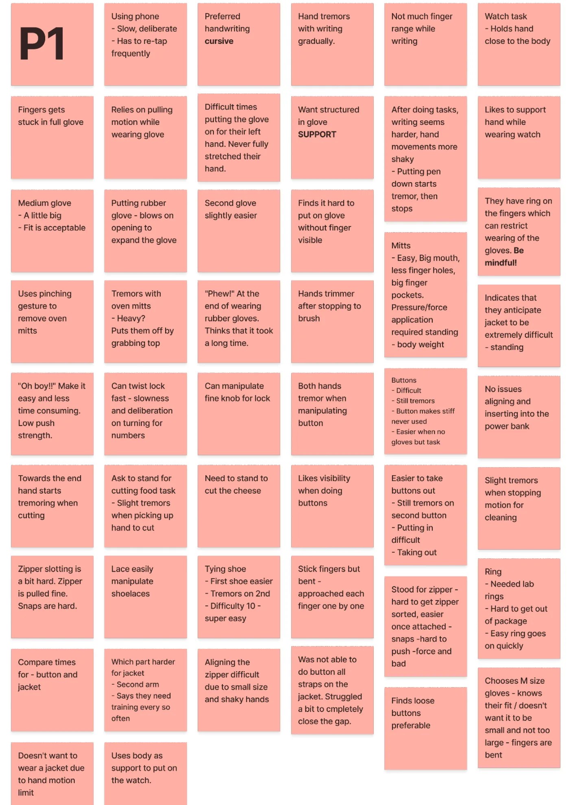
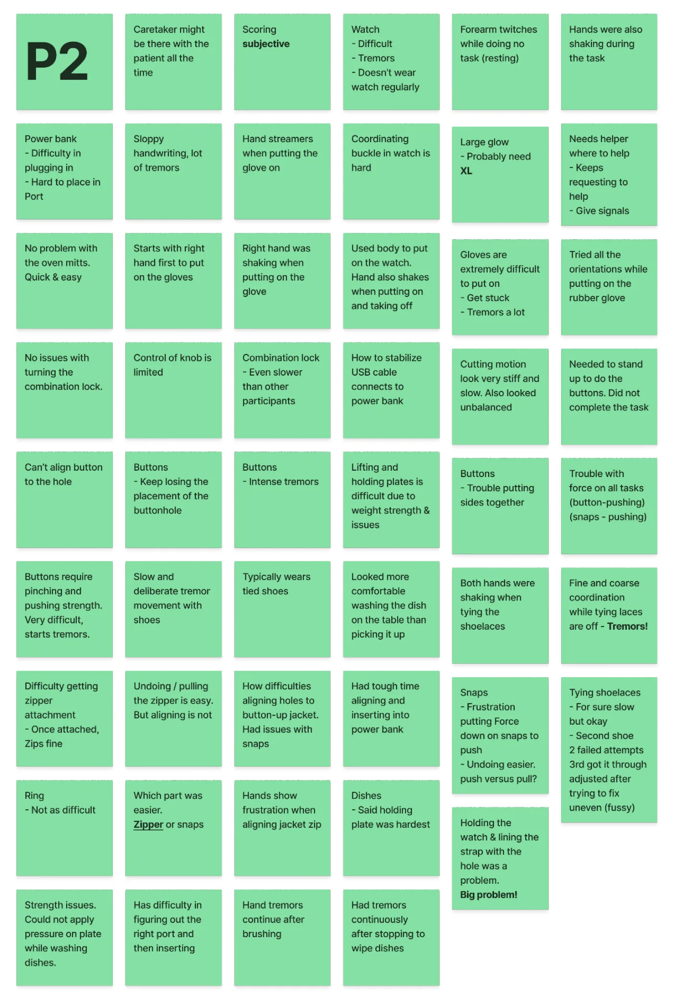
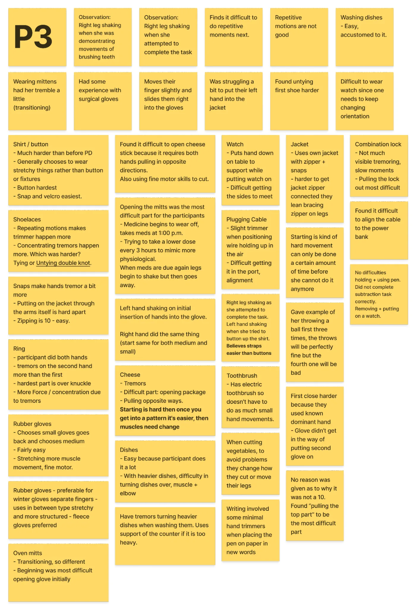
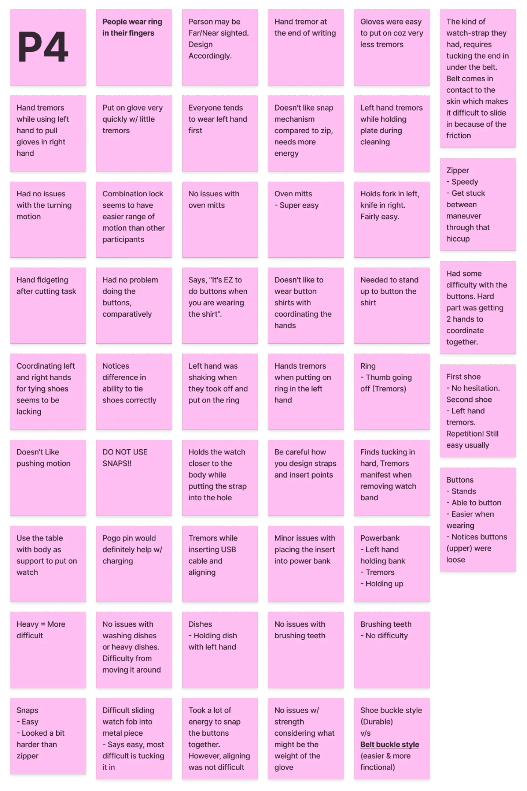